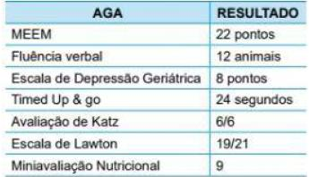
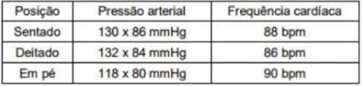

Questão 1 · Fisiologia do Envelhecimento · 4000187324O envelhecimento é Fator de Risco para a maioria das Doenças Cardiovasculares, assim como de inúmeras comorbidades:
A Tornando os idosos o grupo etário de menor risco, mais heterogeneidade e complexidade.
B Tornando os idosos o grupo etário de maior risco, mais heterogeneidade e complexidade.
C Tornando os idosos o grupo etário de maior risco, mais heterogeneidade e não complexidade.
D Tornando os idosos o grupo etário de maior risco, mais homogeneidade e complexidade.
Questão 2 · Fisiologia do Envelhecimento · 4000187317Nos idosos, dislipidemias são diagnosticadas frequentemente, principalmente em mulheres, pois:
A Os níveis de LDL-c tendem a reduzir com o avançar da idade, principalmente após a menopausa, enquanto, nos homens, os níveis de LDL-c tendem a diminuir após 55 anos de idade.
B Os níveis de LDL-c tendem a subir com o avançar da idade, principalmente após a menopausa, enquanto, nos homens, os níveis de LDL-c tendem a diminuir após 65 anos de idade.
C Os níveis de LDL-c tendem a subir com o avançar da idade, principalmente após a menopausa, enquanto, nos homens, os níveis de LDL-c tendem a diminuir após 55 anos de idade.
D Os níveis de LDL-c não tendem a subir com o avançar da idade, principalmente após a menopausa, enquanto, nos homens, os níveis de LDL-c tendem a diminuir após 55 anos de idade.
Questão 3 · Fisiologia do Envelhecimento · 4000187315Com o envelhecimento ocorre mudança na composição corporal, como:
A aumento da gordura visceral e diminuição da massa muscular.
B redução da gordura visceral e diminuição da massa muscular.
C aumento da gordura visceral e nunca diminuição da massa muscular.
D aumento da gordura visceral e diminuição da massa adiposa.
Questão 4 · Fisiologia do Envelhecimento · 4000187311Os idosos devem ser orientados a reduzir a intensidade do exercício em dias úmidos ou quentes, pois:
A O fluxo sanguíneo da pele aumenta com o envelhecimento, com consequente menor eficiência da sudorese e da regulação térmica.
B O fluxo sanguíneo da pele diminui com o envelhecimento, com consequente menor eficiência da sudorese e da regulação térmica.
C O fluxo sanguíneo da pele diminui com o envelhecimento, com consequente menor eficiência da sudorese e não da regulação térmica.
D O fluxo sanguíneo da pele diminui com o envelhecimento, com consequente maior eficiência da sudorese e da regulação térmica.
Questão 5 · Exame f ísico e Avaliação Funcional do Idoso · 4000186936Na avaliação global do idoso, a avaliação funcional é de extrema importância para determinar o grau de independência da pessoa. Para tal avaliação, dispõe-se das escalas de KATZ - atividades da vida diária - (K) e LAWTON - atividades instrumentais da vida diária - (L). Assinale a alternativa que apresenta a sequência CORRETA das escalas. ( ) Deambular. ( ) Manter controle sobre suas necessidades fisiológicas. ( ) Utilizar telefone. ( ) Utilizar meios de transporte. ( ) Realizar compras.
A K/ K/ L/ L/ K
B K/ B/ Z/ L/ L
C K/ K/ L/ K/ L
D L/ K/ L/ L/ K
E K/ K/ L/ L/ L
Questão 6 · Violência contra o idoso · 4000186615Mulher, 86 anos, vem à consulta referindo dores nas costas após queda no banheiro. Hipertensa prévia com controle inadequado dos níveis pressóricos, esquece de tomar as medicações, tem insônia e di culdades para realizar as atividades da vida diária. Quando questionada sobre a rede de apoio, responde evasivamente. A vizinha que acompanha explica que a paciente mora com o lho de 45 anos, alcoolista, antissocial e desempregado, e que os dois sobrevivem com a aposentadoria da paciente. Ao exame físico: lúcida, orientada e coerente, PA 185/110 mmHg, desnutrida, apresentando higiene inadequada e hematomas em região de dorso incompatíveis com sua história de queda. Em relação ao caso, a rma- se: I. Abuso e maus-tratos estão presentes na forma de violência física e negligência. II. O suporte familiar ausente é um dos fatores de risco associados ao agressor. III. As decisões da idosa devem ser sempre respeitadas, mesmo que contrárias às orientações da equipe, considerando válida a abordagem do agressor como parte do problema. Está/Estão correta(s) a(s) afirmativa(s).
A I, apenas.
B II, apenas.
C I e III, apenas.
D I, II e III.
Questão 7 · Fisiologia do Envelhecimento · 4000186455O envelhecimento siológico compreende uma série de alterações nas funções orgânicas devido exclusivamente aos efeitos da idade avançada sobre o organismo, fazendo com que o mesmo perca a capacidade de manter o equilíbrio homeostático e que todas as funções siológicas gradualmente comecem a declinar. Sobre o envelhecimento siológico do sistema cardiovascular, qual alternativa está correta?
A Mudanças morfológicas do coração são vistas em sua porção esquerda: menor hipertrofia e rigidez do ventrículo esquerdo e aumento do átrio esquerdo são observados.
B Devido à importante perda celular na topografia do nó sinusal e a infiltração gordurosa separando este da musculatura subjacente, há uma maior frequência de arritmias.
C As artérias, incluindo a aorta, apresentam menor formação de fibras de colágeno não distensíveis, concomitante à menor desorganização das fibras elásticas.
D Ocorre aumento progressivo dos miócitos com diminuição do volume celular.
E As valvas cardíacas pouco se alteram com o processo do envelhecimento sendo pouco frequentes a ausculta de sopros cardíacos em pacientes idosos.
Questão 8 · Nutrição do idoso · 4000186453No Brasil, e em vários países do mundo, a obesidade já é mais comum do que a desnutrição na população em geral. Entre idosos, a situação não é diferente. Além do próprio processo de envelhecimento, hábitos do nosso estilo de vida atual contribuem para o aumento da obesidade entre os brasileiros. O sedentarismo ou falta de atividade física e dietas inadequadas são os principais fatores associados à epidemia de obesidade nas sociedades modernas. No manejo terapêutico da obesidade no idoso, pode-se afirmar que:
A A cirurgia bariátrica pode ser considerada em indivíduos acima de 65 anos em algumas situações específicas, considerando o risco cirúrgico, presença de comorbidades, expectativa de vida e benefícios da perda de peso.
B Os agonistas dos receptores de GLP-1 não são opções seguras e devem ser evitadas em todas as situações.
C Dietas de muito baixa calorias ou dietas restritas em proteínas são fortemente encorajadas como tratamento nutricional visto baixo risco de exacerbação da sarcopenia.
D Diversos ensaios clínicos, como por exemplo o ADAPT (Arthritis, Diet and Activity Promotion Trial), não conseguiram mostrar evidência que a perda intencional de peso poderia diminuir a longo prazo o risco de mortalidade em idosos. Dessa forma, mesmo com suporte adequado, a perda intencional de peso não apresenta qualquer benefício ao paciente idoso.
E Como toda doença crônica, o tratamento farmacológico tem o objetivo de impedir a progressão e prevenir complicações e deve ser suspenso assim que o efeito de emagrecimento for obtido, visto baixo risco de recuperação do peso prévio após sua interrupção.
Questão 9 · Calendário vacinal do idoso · Calendário vacinal em adultos e idosos · 4000186131Sobre o calendário vacinal do Adulto, assinale a alternativa CORRETA.
A A vacinação para Difteria e Tétano só é recomendada até os 45 anos, sendo indicado um reforço a cada 5 anos.
B A vacina antipneumocócica 23-valente é recomendada para pacientes com 60 anos ou mais que estejam acamados ou institucionalizados.
C A vacina contra a febre amarela é indicada para pessoas de até 59 anos de idade, sendo recomendada uma dose de reforço a cada 10 anos.
D A vacina contra Sarampo, Caxumba e Rubéola é indicada para pacientes com mais de 60 anos, sendo aplicada em 2 doses com intervalo mínimo de 30 dias entre elas.
E A vacina contra a hepatite B é recomendada até os 49 anos, devendo ser aplicada com 4 doses, com intervalo de 2 meses entre elas.
Questão 10 · Program Saúde da Família PSF e Estratégia Saúde da Família ESF · 4000185362Programa de Agentes Comunitários de Saúde PACS O senhor Alfredo e a dona Miriam têm, respectivamente, 80 e 78 anos de idade, e são casados há 60 anos. Moram em uma cidade de 50 mil habitantes e seus lhos e netos moram em uma cidade de maior porte a, aproximadamente, 150 quilômetros. Em um nal de semana, o senhor Alfredo passa mal, é levado ao serviço de urgência por um vizinho, e a dona Miriam recebe a notícia de que ele sofreu um acidente vascular cerebral. Após vários dias no hospital, recebe alta com hemiparesia à esquerda e afasia. Assinale a alternativa correta quanto ao processo de recuperação do senhor Alfredo.
A Os filhos do casal devem abrigá-lo, ficando o senhor Alfredo com quem tem melhores condições de moradia, pois haverá necessidade de cuidadores.
B A equipe de saúde da atenção básica deve buscar uma possibilidade de internar o senhor Alfredo em hospital de longa permanência para aliviar a carga de dona Miriam e convocar a família para que os seus membros os levem para a outra cidade.
C O hospital deve orientar o casal a buscar acomodações próximas ao serviço de reabilitação que a unidade de serviço oferece ambulatorialmente.
D A equipe de saúde da atenção básica deve convocar os filhos do casal e orientá-los no sentido de que o casal necessitará de cuidadores durante 24 horas por dia para que o senhor Alfredo possa se recuperar.
E A equipe de saúde da atenção básica deve analisar o caso, levando em conta que o senhor Alfredo necessitará de reabilitação e atenção que talvez dona Miriam não poderá oferecer, e construir com a família a melhor forma de prosseguir os cuidados.
Questão 11 · Fisiologia do Envelhecimento · As grandes síndromes geriátricas gigantes geriátricos · 4000184853Mulher, 96 anos, com perda progressiva de peso nos últimos anos, apresentou duas quedas em 6 meses, sendo a última há 2 semanas. Não houve fraturas, mas, na última queda, fez uso de tramadol para dor na bacia, tendo ficado muito sonolenta e constipada com essa medicação. A lha acha que a memória está “ótima para a idade”, todavia refere quadro prolongado de: discurso repetitivo no dia-a-dia; troca de nome dos familiares; perda de interesse para as atividades; necessidade de ajuda para tomar remédios. Nega déficits sensoriais, doenças prévias e uso crônico de medicamentos. Exames laboratoriais: normais, exceto uma velocidade de hemossedimentação (VHS) = 42mm/h na 1ª hora. Alguns dados deste caso podem s e r justi cados apenas pelas alterações siológicas do envelhecimento, entretanto, pode-se a rmar que deve ser considerado patológico:
A a perda de peso não intencional, por redução da massa magra não compensada pelo aumento de gordura.
B a velocidade de hemossedimentação elevada, pelo estado inflamatório da imunossenescência.
C a maior susceptibilidade a efeitos adversos de medicamentos, por redução do fluxo sanguíneo e metabolismo hepático.
D o prejuízo no desempenho das atividades de vida diária, por redução das habilidades cognitivas.
Questão 12 · Legislação sobre os idosos · 4000184036Uma grande empresa com muitos adoecimentos do sistema musculoesquelético e da esfera psíquica decide implementar uma política de corte de pessoal e decide começar pelas pessoas com mais idade, em particular aquelas com mais de 60 anos de idade. Assinale a alternativa correta sobre essa situação.
A Essa medida fere a Política Nacional do Idoso, que garante mecanismos que impeçam a discriminação do idoso quanto à sua participação no mercado de trabalho.
B As empresas que utilizam sistemas de gestão modernos têm necessidade de diminuir o contingente de trabalhadores e é mais justo que se comece por pessoas com mais idade, que são mais suscetíveis a doenças.
C As potencialidades das pessoas idosas são menores e as empresas, sejam públicas ou privadas, devem priorizar a manutenção dos empregos das pessoas mais capacitadas e proteger os idosos, afastando-os da atividade de trabalho.
D Essa medida pode ser interpretada como uma maneira de proteção dos idosos, pois determinadas condições de trabalho podem causar adoecimentos em pessoas com menos imunidade.
Questão 13 · Polif armácia · 4000183013Em Atenção Primária à Saúde há necessidade constante de se lidar com o problema da polifarmácia, uma vez que existem muitos pacientes com condições crônicas simultâneas que necessitam de manejo clínico apropriado. Qual das alternativas a seguir descreve uma estratégia correta para se lidar com a polifarmácia na APS?
A Quando houver dois ou mais problemas de saúde, deve-se tentar usar um medicamento que trate mais de uma condição simultaneamente.
B Mesmo que determinada expectativa de vida seja alcançada, medicamentos de uso contínuo deverão ser mantidos uma vez que serão benéficos até o final da vida.
C Quando determinado problema de saúde estiver controlado, os fármacos devem ter sua dose mantida para controle dos sintomas, preferencialmente em dose plena.
D O uso simultâneo de até oito medicamentos ainda não caracteriza polifarmácia, sendo necessária a revisão das necessidades e efeitos adversos somente a partir desta quantidade de fármacos.
Questão 14 · Saúde do Idoso geriatria · 4000183009A atenção à saúde do idoso é uma das práticas comuns em Atenção Primária à Saúde. Sobre a saúde da população idosa, qual é a alternativa que melhor descreve os OBJETIVOS do cuidado e seguimento do idoso em APS?
A A busca da cura fisiopatológica de todas as condições presentes no idoso.
B A maior longevidade possível, independente da funcionalidade.
C A manutenção da autonomia, da independência funcional, com extensão da expectativa de vida ativa e melhora na qualidade de vida.
D A obtenção do melhor manejo farmacológico possível, razão pela qual o cuidado ao idoso deve ser exclusivamente médico.
Questão 15 · Saúde do Idoso geriatria · 4000190985Em relação à saúde do idoso, é correto afirmar que
A a expectativa de vida aos 60 ou mais anos de idade mede a taxa de morte entre as pessoas de zero a 60 anos, comparada com aqueles acima de 60 anos.
B a promoção do envelhecimento bem-sucedido implica ações, iniciativas, atitudes e intervenções que dizem respeito a todos os grupos etários e não somente aos adultos e idosos.
C a maior parte da população idosa encontra-se na faixa de 75 a 84 anos, sendo constituída por 65% de pessoas do sexo masculino.
D o índice de envelhecimento é a relação entre o seguimento etário da população economicamente dependente e o seguimento etário potencialmente produtivo.
E a razão de dependência é um indicador fundamental para a definição de saúde nesse grupo, uma vez que contempla as necessidades para sobrevivência e autocuidado.
Questão 16 · Saúde do Idoso geriatria · Antipsicóticos · 4000173519Uma paciente de 92 anos, diabética e hipertensa, com um grau leve de declínio cognitivo, sofreu fratura do colo do fêmur após queda da própria altura. No segundo dia pós-operatório de artroplastia do quadril, quando ainda estava em regime de terapia intensiva, começou a apresentar desorientação e agitação que piorava muito durante a noite. Ao exame, percebia- se desorganização do raciocínio, desatenção e alternância de sonolência com agitação. A tomogra a de crânio foi normal. Qual das medidas abaixo relacionadas seria benéfica para essa paciente?
A Contenção mecânica ao leito durante a noite
B Manutenção em regime de terapia intensiva para monitorização rigorosa do estado mental
C Adiamento dos cuidados fisioterápicos para deambulação devido ao aumento do risco de quedas
D Garantia de iluminação adequada, de preferência com luz solar e do uso das lentes corretivas prévias
E Prescrição de clonazepam 0,5 mg às 21 horas
Questão 17 · Saúde do Idoso geriatria · 4000170052Em relação ao
A os antipsicóticos representam a principal abordagem farmacológica para o tratamento de pacientes portadores de
B de acordo com o
C as medidas de prevenção incluem estimular a mobilidade e a ingestão hídrica, orientá-los no tempo e no espaço e otimizar o sono à noite com medidas não farmacológicas.
D está indicada a realização de um exame de neuroimagem, como tomografia computadorizada ou ressonância magnética.
Questão 18 · Exame f ísico e Avaliação Funcional do Idoso · 4000169864Sobre a capacidade cognitiva e a avaliação geriátrica de depressão, assinale a afirmativa correta.
A O Mini Mental (Mini Exame do Estado Mental) avalia se o paciente idoso está apresentando sinais sugestivos de depressão.
B O teste de Fluência Verbal tem por finalidade avaliar a capacidade de o idoso repetir palavras selecionadas no menor tempo possível.
C O teste do Relógio mede a capacidade de o idoso se localizar no tempo e espacialmente e, quando alterado, pode indicar déficit cognitivo importante.
D A Escala Geriátrica de Yesavage mede, através de 15 perguntas simples de "Sim" ou "Não", o grau de depressão do idoso avaliado, o que poderia indicar o início do tratamento.
Questão 19 · As grandes síndromes geriátricas gigantes geriátricos · 4000169129Assinale a alternativa correta considerando as peculiaridades do cuidado à pessoa idosa.
A O processo de envelhecimento se comporta de maneira uniforme dentro da faixa etária acima dos 60 anos e tem particularidades biopsicossociais diferentes da população adulta.
B A perda da funcionalidade é o condicionante mais importante de desfechos desfavoráveis na pessoa idosa.
C As ações e intervenções oferecidas às pessoas idosas são baseadas na abordagem da doença, sendo responsáveis por reduzir a prevalência de iatrogenia.
D O declínio funcional da pessoa idosa é imprevisível, inevitável e pode ser adiado com base no modelo de assistência ofertado hoje.
E A Pesquisa Nacional de Amostra de Domicílios (PNAD) de 2008 mostrou que na faixa etária de 60 a 69 anos, 35,7% dos idosos são independentes funcionais e 57,5% na faixa etária de 70 a 79 anos.
Questão 20 · Exame f ísico e Avaliação Funcional do Idoso · Fisiologia do Envelhecimento · 4000167934Do ponto de vista siológico o envelhecimento humano caracteriza-se por um declínio progressivo da reserva homeostática e de todos os sistemas orgânicos. Avalie as assertivas abaixo e assinale com V (verdadeiro) ou F (falso) e escolha a alternativa que contém a sequência correta. [ ] O exame físico do paciente idoso, em termos gerais, não difere daquele feito para o adulto, e deve-se sempre considerar que o sopro sistólico nestes pacientes é um achado comum, e pode ser útil diferenciá-lo da estenose aórtica. [ ] Os pacientes idosos apresentam um conjunto de alterações farmacocinéticas como redução do uxo plasmático renal, da taxa de filtração glomerular e da depuração hepática. [ ] As respostas aos níveis séricos de opiáceos não diferem daquelas em pacientes adultos. [ ] Pessoas idosas apresentam aumento na água corporal e redução relativa na gordura corporal, causando aumento na concentração de fármacos hidrossolúveis e prolongando a meia-vida dos lipossolúveis. [ ] Em pacientes idosos com atividade insu ciente do músculo detrusor, em uso de cateterização intermitente, são indicados antibióticos para profilaxia de infecções recorrentes.
A F, V, V, F, V
B V, V, F, F, V
C V, V, V, F, F
D F, F, V, V, F
E Nenhuma das alternativas acima está correta.
Revisar: possível letra faltando em enunciado
Questão 21 · Medicina Preventiva · Polif armácia · 4000167574Os regimes complicados de medicamentos costumam exceder a capacidade de manejo, reduzindo a adesão, muitas vezes com efeitos negativos irreversíveis, com piora da qualidade de vida, principalmente em idosos. Provavelmente são mais ameaçadores do que as doenças para as quais os fármacos são prescritos. O texto se refere à
A medicalização.
B polifarmácia.
C prevenção quaternária.
D mercantilização da saúde.
E distanásia.
Questão 22 · Polif armácia · 4000166546A desprescrição de medicamentos é o processo sistemático de identi cação e descontinuação de um ou mais fármacos por parte de um médico, fazendo parte de um processo contínuo de boa prescrição que inclui o início da terapia, a escolha da dose apropriada, a troca ou adição de medicamentos ao esquema e a mudança ou interrupção de terapias farmacológicas. Sobre a abordagem da desprescrição, assinale a alternativa CORRETA:
A A falta de alterações significativas ao ser retirada uma medicação é sinal de que a desprescrição, ou ao menos a troca/ajuste de medicamentos, é necessária.
B A suspensão de várias medicações de uma vez permite melhor esclarecimento sobre o fármaco que pode estar causando evento adverso.
C Após a suspensão de uma medicação, não é preciso avaliar continuamente os pacientes para resultados positivos da desprescrição, pois o problema já foi solucionado.
D Ao iniciar o uso de um fármaco, não se deve fornecer ao paciente todas as informações sobre o seu tratamento, com o objetivo de poupá-lo de mais preocupações.
Questão 23 · Saúde do Idoso geriatria · 4000165203Assinale a alternativa correta no tocante à política nacional de saúde da pessoa idosa.
A Um de seus pilares é a atenção aos idosos institucionalizados, que representam mais de um terço das pessoas acima de 60 anos de idade do país.
B Os idosos que não investiram em promoção da saúde nas fases anteriores devem ser abordados como pessoas com muitas doenças crônicas.
C A atenção à pessoa idosa é fundamentada principalmente na vacinação contra as doenças mais prevalentes nesse segmento social.
D Embora haja certa heterogeneidade do segmento de idosos, suas necessidades são similiares, em particular, no aspecto da dependência em relação aos mais jovens.
E Fazem parte dos cuidados aos idosos, informar e estimular a prática de nutrição balanceada, sexo seguro, imunização e hábitos de vida saudáveis.
Questão 24 · Polif armácia · 4000165185Considerando os riscos decorrentes de polifarmácia e os benefícios da suspensão ativa de medicamentos, assinale os itens a seguir como verdadeiros (V) ou falsos (F). I - Cada pessoa que utiliza cinco ou mais fármacos deveria ter revisão de seu plano terapêutico para avaliar a possibilidade de suspensão de fármacos e/ou redução de doses. II - Bifosfonados têm efeito que se estende além do momento em que são suspensos, sendo razoável considerar sua desprescrição após 5 ano de uso. III - A levotiroxina de uso contínuo deve ter sua dose ajustada, mas não suspensa em pacientes idosos, mesmo em caso de hipotiroidismo subclínico. IV - Em pacientes que se encontram em quadros de menor expectativa de vida, é recomendado priorizar os fármacos preventivos em reavaliações visando desprescrição. V - Como a suspensão de inibidores de bomba de prótons não causa rebote, pode-se encerrar seu uso de forma súbita, independentemente da dose, quando atingido o prazo indicado. Escolha a alternativa com a sequência correta
A V, V, V, F, F
B V, V, F, V, F
C V, F, V, F, V
D F, V, F, V, V
E F, F, V, V, V
Questão 25 · Saúde do Idoso geriatria · 4000165184Lucilene, 79 anos, veio à consulta preocupada com sua alimentação, especialmente por acreditar que consome poucas vitaminas e por não conseguir perder peso, apesar de ter aumentado suas caminhadas para 40 minutos cinco dias por semana. Hoje está com 81kg e 1,75m (IMC= 26,45).Para conduzir esta consulta, analise as afirmativas abaixo. I - Nessa faixa etária, esse IMC não é um foco para ser enfatizado nos cuidados de saúde. II - Antes de apresentar recomendações dietéticas, é necessário averiguar qual o tipo de processamento de alimentos ela habitualmente consome. III - Caso o recordatório alimentar sugira consumo de cálcio inferior à recomendação diária, é necessário garantir suplementação, por ser mais efetiva e mais segura. Assinale a alternativa com as afirmativas corretas.
A Todas: I, II e III.
B Apenas I e II.
C Apenas a I.
D Apenas a II.
E Apenas a III
Questão 26 · Quedas em idosos · Protocolos de prevenção de quedas · Neurologia · 4000164558Analise as seguintes assertivas em relação às quedas no idoso: I. Mudanças posturais relacionadas à idade, dé cit visual, uso de medicações e doenças que afetam a força muscular e a coordenação motora são fatores que contribuem para índices tão altos. II. Os pacientes raramente mencionam o evento ao seu médico se não houve lesão por ocasião da queda, e o pro ssional de saúde não tem por hábito perguntar sobre a história pregressa de quedas. III. Mesmo quando resultam em algum agravo que necessite tratamento, raramente as causas das quedas são investigadas de forma a identificar possíveis causas evitáveis. Quais estão corretas?
A Apenas I e II.
B Apenas I e III.
C Apenas II e III.
D I, II e III.
Questão 27 · Saúde do Idoso geriatria · Antipsicóticos · Estado Conf usional Agudo Delirium · 4000164287Mulher, 85 anos, portadora de síndrome da fragilidade e hipertensão arterial sistêmica. Interna devido a pneumonia e evolui, no segundo dia de internação, com agitação e confusão mental. Ao exame físico: REG, confusa, desidratada 1+/4+. PA: 149 x 68 mmHg, FC 92 bpm, FR: 18 irpm, satO₂: 94% com cateter nasal a 2 L/min. Ausculta pulmonar: MV presente, com roncos de transmissão difusos. Ausculta cardíaca sem alterações. Abdome doloroso à palpação difusa, sem massas ou visceromegalias palpáveis. Em relação à alteração comportamental, qual é o tratamento medicamentoso mais adequado?
A Diazepam.
B Clorpromazina.
C Clonazepam.
D Haloperidol
Questão 28 · Polif armácia · 4000164105No acompanhamento ambulatorial de pacientes na atenção primária à saúde (APS), o médico deve estar atento à prescrição dos medicamentos. Em relação aos cuidados para evitar a polifarmácia, é correto afirmar que:
A deve-se adotar um limiar baixo para acrescentar medicamentos e alto para suspendê-los
B todos os fármacos preventivos devem ser mantidos ao longo da vida, pois existem boas evidências de melhores desfechos da saúde
C os jovens com múltiplas doenças e as pessoas que saíram de uma hospitalização também são vulneráveis aos efeitos da polifarmácia
D alguns fármacos são fatores de risco para reações adversas aos medicamentos (RAM) em idosos, mas o tipo de doença não interfere na RAM
Questão 29 · Calendário vacinal do idoso · 4000173943São vacinas indicadas aos idosos, pelo Programa Nacional de Imunizações/MS/Brasil:
A Triplice viral e BCG.
B Rotavirus e Sarampo.
C Hepatite B e Dupla Adulto (DT).
D Varicela e dTpa(adulto).
Questão 30 · As grandes síndromes geriátricas gigantes geriátricos · 4000172339Pelo conceito atual, o termo ""síndrome geriátrica"" descreve condições apresentadas por idosos que se não encaixam em categorias de doenças especí cas, mas que são altamente prevalentes, tem etiologia multifatorial e associam-se a múltiplas comorbidades e desfechos negativos com piora da qualidade de vida. Marque a alternativa que evidencie dois componentes da síndrome geriátrica:
A Medo da morte e uso abusivo de medicações.
B Imobilidade e incapacidade cognitiva.
C Incontinência urinária e dispepsia.
D Dor crônica e diminuição da acuidade visual.
Revisar: possível letra faltando em enunciado
Questão 31 · Dependência de Álcool · Exame f ísico e Avaliação Funcional do Idoso · 4000171621José comemorou seu aniversário no último mês e decidiu que precisava fazer uns exames. Procurou a UBS perto da sua casa para conversar com a enfermeira que, analisando sua história familiar, sua idade e seu estilo de vida, achou melhor passar por consulta médica. José tem 60 anos, hipertenso há 10 anos e desde então faz uso de Losartana 50mg 2x ao dia. Na consulta com a enfermeira, pesou 100kg, IMC*: 32, PA**: 130x80. Últimos exames realizados há mais de 2 anos, quando cou internado devido a uma pneumonia. José é tabagista (30 maços/ano) e sedentário, e relata que bebe uma ""cervejinha"" no nal de semana. A médica opta por realizar exames de rotina para hipertensão e tem como resultado: creatinina: 1,0; glicemia: 142; colesterol total: 250, Colesterol HDL: 50; colesterol LDL: 130; triglicérides: 350. (""IMC: Índice de massa corporal: **PA: Pressão arterial) Levando em consideração o caso clínico acima, quais escores seriam possíveis calcular com esse paciente?
A Framingham, CAGE, Fagerstrom e Avaliação Geriátrica Ampla.
B Framingham, CAGE, AUDIT, Avaliação Geriátrica Ampla.
C Framingham, CAGE (se triagem positiva, AUDIT), Fagerstrom e Avaliação Geriátrica Ampla.
D Apenas a Avaliação Geriátrica Ampla, visto que já avalia todos os escores acima descritos.
Questão 32 · Cuidados paliativos · 4000171527Dona Maria Inês, 92 anos, está acamada, totalmente dependente para atividades diárias, confusa, com quadro avançado de Alzheimer. É obesa, hipertensa (em uso de Anlodipina, Propranolol e Losartana), diabética (em uso de Metformina e Glicazida), além de tomar medicações para dislipidemia (Sinvastatina), hipotiroidismo (Puran T4), insu ciência venosa (Diosmina - Hesperidina) e labirintite (Betaistina). Faz uso, ainda, de medicações para o Alzheimer (Memantina e Galantamina) e de um remédio para dormir (Bromazepam). A família da paciente solicitou uma visita domiciliar de rotina, e a principal queixa foi a alimentação inadequada de dona Maria Inês, que não está aceitando nada além de pizza e empadas. Você, como médico da Atenção Primária que acompanha esta paciente, deve ter como principal foco de atenção durante a consulta da paciente, e como conduta mais adequada, respectivamente:
A a questão nutricional, pois a alimentação inadequada pode resultar em descontrole dos quadros já apresentados, deve ser encaminhada ao Nutricionista.
B a polifarmácia, pois a interação medicamentosa pode levar a outras comorbidades; devem ser mantidos apenas os medicamentos para Hipertensão Arterial e diabetes mellitus, com suspensão de todos os outros.
C a qualidade de vida da paciente, pois pela idade e quadro clínico ela se encaixa em perfil para cuidados paliativos; deve ser incentivada a oferta de alimentos que ela goste, como pizza e empadas.
D o uso do Bromazepam, pois piora o risco de quedas e pode estar contribuindo para a confusão mental da paciente; deve ser suspensa a medicação imediatamente.
Questão 33 · Polif armácia · 4000171321Nos idosos os tratamentos farmacológicos devem priorizar condições e restringir o número de medicamentos, sendo adequado o item:
A Não simplificar a posologia, avaliar e estimular a adesão insatisfatória até na prevenção secundária após IAM e orientar sobre os problemas da automedicação.
B Simplificar a posologia, avaliar e estimular a adesão insatisfatória até na prevenção secundária após IAM e não orientar sobre os problemas da automedicação.
C Simplificar a posologia, avaliar e estimular a adesão insatisfatória até na prevenção secundária após IAM e orientar sobre os problemas de não realizar a automedicação.
D Simplificar a posologia, avaliar e estimular a adesão insatisfatória até na prevenção secundária após IAM e orientar sobre os problemas da automedicação.
Questão 34 · Polif armácia · Cuidados paliativos · 4000171319No idoso, a indicação de tratamentos exige mais cautela, as metas terapêuticas são menos precisas, porém sonegá-las apenas devido à idade implica omissão. Sendo correto o item:
A As decisões não devem ser compartilhadas e é necessário considerar a relação risco/benefício e a expectativa de vida.
B As decisões devem ser compartilhadas e é desnecessário considerar a relação risco/benefício e a expectativa de vida.
C As decisões devem ser compartilhadas e é necessário considerar a relação risco/benefício e a expectativa de vida.
D As decisões devem ser compartilhadas e é necessário considerar a relação risco/benefício e não a expectativa de vida.
Questão 35 · As grandes síndromes geriátricas gigantes geriátricos · 4000171310Os indivíduos idosos com diabetes têm risco aumentado para desenvolvimento das síndromes geriátricas, sendo correto o item:
A Tais como polifarmácia, déficit cognitivo, incontinência urinária, quedas e dor crônica; os indivíduos com estas síndromes que desenvolvem diabetes têm seu quadro agravado.
B Tais como polifarmácia, déficit cognitivo, incontinência urinária, quedas e dor crônica; os indivíduos com estas síndromes que desenvolvem diabetes têm seu quadro melhorado.
C Tais como polifarmácia, déficit cognitivo, incontinência urinária, quedas e dor crônica; os indivíduos com estas síndromes que não desenvolvem diabetes têm seu quadro agravado.
D Tais como polifarmácia, déficit cognitivo, incontinência urinária, quedas e não a dor crônica; os indivíduos com estas síndromes que desenvolvem diabetes têm seu quadro agravado.
Questão 36 · Saúde do Idoso geriatria · Complicações microvasculares · Complicações macrovasculares · 4000170940É fundamental, além do rastreamento para complicações, uma avaliação multidimensional do indivíduo idoso diabético. Sendo correto o item:
A Pelo benefício do diagnóstico e do tratamento precoce na prevenção de complicações.
B Pelo benefício do diagnóstico e do tratamento tardio na prevenção de complicações.
C Pelo benefício do diagnóstico e não do tratamento precoce na prevenção de complicações.
D Pelo benefício do diagnóstico e do tratamento precoce na manutenção de complicações.
Questão 37 · Saúde do Idoso geriatria · Exame f ísico e Avaliação Funcional do Idoso · 4000170936A Pesquisa Nacional de Saúde realizada pelo Instituto Brasileiro de Geogra a e Estatística (IBGE) mostrou prevalência de diabetes melito de 19,9% nos indivíduos na faixa etária de 65 a 74 anos de idade. Está correto o item:
A No idoso diabético há redução da mortalidade e redução da capacidade funcional com consequente aumento do risco de institucionalização.
B No idoso diabético há aumento da mortalidade e aumento da capacidade funcional com consequente aumento do risco de institucionalização.
C No idoso diabético há aumento da mortalidade e redução da capacidade funcional com consequente aumento do risco de institucionalização.
D No idoso diabético há aumento da mortalidade e redução da capacidade funcional com consequente menor risco de institucionalização.
Questão 38 · Calendário vacinal do idoso · 4000170270Segundo o Calendário Nacional de Vacinação, as vaci- nas recomendadas para os idosos, além da vacina anual contra a gripe, são:
A hepatite B, febre amarela, varicela e pneumocócica10 valente.
B hepatite A, febre amarela, pneumocócica 10 valente e dupla adulto(dT).
C hepatite C, HPV, meningocócica e pneumocócica 23 valente.
D hepatite B, febre amarela, dupla adulto(dT) e pneumocócica 23 valente.
E hepatite A, febre amarela, varicela e meningocócica.
Questão 39 · As grandes síndromes geriátricas gigantes geriátricos · 4000151738O cuidado com a saúde do idoso frágil difere bastante do adulto, onde predomina a presença de uma única doença ou fator de risco. “O idoso não é um adulto de cabelos brancos!”. Considerando essas especificidades, assinale a alternativa correta.
A O cuidado compartilhado é fruto do processo de negociação com familiares do idoso e o médico assistente.
B A avaliação dos sistemas funcionais do idoso deve incluir escalas que apresentam alto índice de especificidade e sensibilidade para diagnóstico.
C São fármacos com alto risco de toxicidade em idosos: losartana, ciclobenzaprina, quetiapina, nifedipina e mirtazapina.
D A funcionalidade global é o ponto de partida para a avaliação da saúde do idoso.
E As quedas ocorrem em 30% dos idosos e representam a principal causa mortis desse público.
Questão 40 · Saúde do Idoso geriatria · 4000147070Uma mulher de 83 anos, hipertensa, sem outras comorbidades, comparece à unidade de saúde para verificação da pressão arterial de rotina. Está assintomática no momento. Utiliza apenas um comprimido de losartana 50 mg. No momento do exame, sua pressão arterial é de 90x60 mmHg. A paciente refere que eventualmente tem sentido tonturas, porém nega outras manifestações. Tendo em vista suas características e o histórico apresentado, qual dos seguintes agravos representa um maior risco à saúde dessa paciente nesse contexto?
A Câncer de mama.
B Infecção urinária.
C Queda.
D Demência vascular.
E Depressão.
Questão 41 · Medicina Preventiva · Exame f ísico e Avaliação Funcional do Idoso · Medicina de Família e Comunidade · 4000146905Sobre anamnese e exame físico de um paciente idoso, é INCORRETO afirmar que:
A A anamnese pode ser dificultada pelo déficit de memória e de audição.
B A omissão ou desvalorização ou hipervalorização de sintomas é comum na consulta geriatrica.
C É incomum encontrarmos mais de uma causa para um mesmo sinal ou sintoma.
D No atendimento ao idoso, o médico deve estar atento as peculiaridades sobre as diversas doenças nesta faixa etária.
E O fenômeno iceberg na geriatria refere-se ao fato de muitos problemas permanecerem ocultos ou submersos durante a entrevista.
Questão 42 · Saúde do Idoso geriatria · Urologia · 4000146417Assinale a alternativa correta em relação à incontinência urinária (IU) em idosos.
A A IU em idosas se deve, entre outras causas, à redução da pressão máxima de fechamento uretral, consequência de danos secundários a partos, cirurgias, radiação, tabagismo e obesidade.
B A ocorrência de IU é frequente nos idosos e tende a aumentar à medida em que aumenta o número de medicamentos em uso, não devendo suscitar preocupações por parte da equipe de saúde, uma vez que não tem significado clínico.
C A IU em idosos pode ser definida como a perda de urina em quantidade e frequência suficientes para causar um problema dermatológico da região perineal.
D A equipe de saúde deve se dedicar à conscientização dos idosos para convencê-los de que a ocorrência de IU em idosos é comum e não tem importância clínica ou psicológica, a não ser que tenha ocorrido de forma aguda.
E Quando a pessoa idosa relata perda involuntária de urina, deve ser orientada para cuidar da higiene de maneira que não haja impacto social, uma vez que não há significado clínico importante.
Questão 43 · Program Saúde da Família PSF e Estratégia Saúde da Família ESF · Violência · Violência contra o idoso · 4000146395A violência intrafamiliar é um problema social de grande dimensão que afeta toda a sociedade, atingindo, de forma continuada, especialmente mulheres, crianças, adolescentes, idosos e portadores de de ciência. Diante dessa realidade, assinale a alternativa que contenha medida(s) adequada(s) a ser(em) adotada(s) no SUS para propiciar atenção à saúde dos usuários.
A Capacitar as equipes de saúde da família para notificar as situações de violência às delegacias de polícia, para que providências sejam tomadas em relação à pessoa agressora.
B Treinar as equipes de saúde da família para identificar a pessoa agressora e chamá-la à unidade básica de saúde para convencê-la a mudar seu comportamento.
C Capacitar as equipes de saúde da família para identificar pessoas em situação de violência e criar espaços de diálogo acolhedor, que possibilitem a troca de saberes e a expressão de sentimentos, sem julgamento, sem críticas ou discriminação.
D Criar, no âmbito do SUS, serviços especializados em violência doméstica onde haja assistência psicológica às vítimas no nível dos ambulatórios de especialidades.
E Reservar um espaço físico específico nas unidades básicas de saúde e nos ambulatórios de especialidades para atenção multidisciplinar e intersetorial às vítimas de violência.
Questão 44 · Fisiologia do Envelhecimento · 4000145786Segundo a Organização Mundial da Saúde, ao se considerar a epidemiologia do envelhecimento, deve-se analisar a saúde dos idosos considerando alguns aspectos. Sendo assim, assinale V, se verdadeiras, ou F, se falsas para as assertivas a seguir. ( ) O gênero. ( ) A cultura. ( ) Os determinantes da saúde. ( ) O ambiente físico. A ordem correta de preenchimento dos parênteses, de cima para baixo, é:
A V – V – V – F.
B V – F – F – F.
C F – F – V – V.
D V – V – V – V.
E F – V – F – V.
Questão 45 · Saúde do Idoso geriatria · 4000145730Na avaliação de indivíduos geriátricos, é fundamental a avaliação e classificação de suas atividades (básicas ou instrumentais) diárias. Das atividades abaixo, é classificada como atividade instrumental de vida diária a capacidade de:
A Se vestir.
B Tomar banho.
C Cozinhar.
D Realizar sua própria toalete.
E Deslocar-se da cama para a cadeira.
Questão 46 · As grandes síndromes geriátricas gigantes geriátricos · 4000145329O cuidado com a saúde do idoso frágil difere bastante do adulto, onde predomina a presença de uma única doença ou fator de risco. ""O idoso não é um adulto de cabelos brancos!"". Considerando essas especi cidades, assinale a alternativa correta.
A O cuidado compartilhado é fruto do processo de negociação com familiares do idoso e o médico assistente.
B A avaliação dos sistemas funcionais do idoso deve incluir escalas que apresentam alto índice de especificidade e sensibilidade para diagnóstico.
C São fármacos com alto risco de toxicidade em idosos: losartana, ciclobenzaprina, quetiapina, nifedipina e mirtazapina.
D A funcionalidade global é o ponto de partida para a avaliação da saúde do idoso.
E As quedas ocorrem em 30% dos idosos e representam a principal causa mortis desse público.
Questão 47 · Fisiologia do Envelhecimento · 4000145069Devemos car atentos as principais alterações farmacológicas e farmacodinâmicas das drogas do idoso, pois com isso evitaremos possíveis iatrogenias, sendo com isso correto dizer:
A No gerante temos maior intoxicação por drogas hidrofílicas, como o fenobarbital.
B Temos um prejuízo na absorção de certos medicamentos no idoso devido a sua hipocloridria, sendo um dos exemplos o ferro e salicilato.
C A digoxina é um dos medicamentos que não sofre alteração na absorção devido ao Ph mais alto no gerante.
D Tanto o processo de oxidação como conjugação hepática está reduzido no paciente idoso.
E A creatinina é fidedigna não avaliação renal do idoso.
Questão 48 · Quedas em idosos · Neurologia · 4000144889As quedas em idosos são eventos comuns, chegando a afetar 1/3 de pessoas que moram nas suas casas e 50% de moradores de asilos. As principais causas que podem contribuir para as quedas incluem todas as opções abaixo, exceto:
A Isquemia cerebral transitória
B Convulsões
C Arritmias cardíacas
D Deficiência de vitamina D
Questão 49 · Polif armácia · 4000144713Homem, 79 anos de idade, independente para as atividades básicas e instrumentais de vida diária comparece à consulta médica. Antecedentes pessoais: hipertensão arterial, diabetes, dislipidemia, osteoartrite em joelhos e baixa acuidade visual corrigida por lentes. Faz uso contínuo de losartana 50 mg 2 vezes ao dia, hidroclorotiazida 25 mg 1 vez ao dia, ácido acetilsalicílico 100 mg ao dia, metformina XR 500 mg 1 vez ao dia e sinvastatina 20 mg à noite. Examefísico: IMC = 19,5 kg/m2 , aumento do volume e crepitações grosseiras em ambososjoelhos. Por qual das condições relatadas o paciente teria risco maior de apresentar reação adversa a medicamento?
A 5 ou mais doenças crônicas.
B Indice de massa corporal diminuído.
C 5 ou mais doses diárias de medicamentos.
D Idade maior que 70 anos.
Questão 50 · Legislação sobre os idosos · 4000144678De acordo com a Política Nacional de Saúde da Pessoa Idosa, a atenção integral e integrada à saúde da pessoa idosa deverá ser estruturada, nos moldes de uma linha de cuidados, com foco no usuário, baseado nos seus direitos, necessidades, preferências e habilidades; estabelecimento de fluxos bidirecionais funcionantes:
A para que haja a participação de profissionais de saúde e usuários na construção de planos locais de ações para enfretamento das dificuldades inerentes à complexidade de saúde da pessoa idosa.
B aumentando e facilitando o acesso a todos os níveis de atenção; providos de condições essenciais - infraestrutura física adequada, insumos e pessoal qualificado para a boa qualidade técnica.
C implementando ações para reduzir hospitalizações e aumentar habilidades para o autocuidado dos usuários do SUS.
D incluindo a atenção domiciliar e ambulatorial, com incentivo à utilização de instrumentos técnicos validados, como de avaliação funcional e psicossocial.
Questão 51 · Saúde do Idoso geriatria · Legislação sobre os idosos · 4000144677Envelhecimento populacional é definido como a mudança na estrutura etária da população, o que produz um aumento do peso relativo das pessoas, acima de determinada idade, considerada como definidora do início da velhice (Carvalho & Garcia, 2003). No Brasil, é definida como idosa a pessoa que tem:
A 55 anos ou mais de idade.
B 59 anos ou mais de idade.
C 60 anos ou mais de idade.
D 64 anos ou mais de idade.
Questão 52 · Polif armácia · Desprescrição de medicações em idosos · 4000144579Seu Juvenal, 68 anos, tem diagnóstico de Hipertensão Arterial Sistêmica, Fibrilação Atrial, Dislipidemia e Doença do Refluxo Gastro-Esofágico. Faz uso de: atenolol 25 mg duas vezes ao dia, Losartana 50 mg uma vez ao dia, Hidroclorotiazida 25 mg uma vez ao dia, Sinvastatina 40 mg uma vez ao dia, Omeprazol 20 mg uma vez ao dia, Rivaroxabana 20 mg uma vez ao dia, Bupropiona 150 mg uma vez ao dia e Clonazepam 2 mg (prescritos após falecimento do irmão). Queixa-se de tontura e náuseas eventuais sem outros sintomas associados. Apresenta PA:130x80mmHg, exame cardiovascular, respiratório, abdominal, e neurológico normais. Teste de Romberg e Dix-Hallpike negativos. Diante de tal situação, qual seria a melhor opção terapêutica?
A Prescrever domperidona em uso contínuo a fim de acelerar o esvaziamento gástrico, reduzindo o refluxo gastroesofágico e as náuseas.
B Prescrever flunarizina em uso contínuo a fim de controlar os sintomas apresentados porJuvenal.
C Solicitar avaliação de otorrinolaringologista e cardiologista.
D Rever os medicamentos usados considerando a possibilidade de que se trate de efeito adverso de algum medicamento em uso.
Questão 53 · As grandes síndromes geriátricas gigantes geriátricos · 4000144486As síndromes geriátricas são também conhecidas como as ""Gigantes da Geriátria"". Dentre elas a de Imobilidade é caracterizada por critérios diagnósticos maiores e menores (dois maiores mais dois menores). Qual das alternativas abaixo NÃO representa um critério menor?
A Úlceras por pressão.
B Disfagia.
C Sarcopenia.
D Incontinência fecal e urinária.
Questão 54 · Saúde do Idoso geriatria · 4000144429O envelhecimento é um direito personalíssimo e a sua proteção, um direito social, e é dever do Estado garantir à pessoa idosa a proteção à vida e à saúde mediante a efetivação de políticas públicas que permitam um envelhecimento saudável e em condições de dignidade. A garantia desses direitos está determinada na legislação com o advento do Estatuto do Idoso - Lei no 10.741, de 1 º de outubro de 2003, considerada uma das maiores conquistas da população idosa brasileira. Quanto ao Estatuto do Idoso, assinale a alternativa que NÃO está correta.
A Os casos de suspeita ou confirmação de violência praticada contra idosos serão objetos de notificação compulsória pelos serviços públicos e privados à autoridade sanitária, bem como serão obrigatoriamente comunicados por eles a quaisquer dos seguintes órgãos: autoridade policial; Ministério Público; Conselho Municipal do Idoso; Conselho Estadual do Idoso; Conselho Nacional do Idoso.
B A participação de idosos em atividades culturais e de lazer será proporcionada mediante descontos de 20% para idosos de 60 aos 75 anos e de 50% para aqueles maiores de 75 anos.
C Ao idoso que esteja no domínio de suas faculdades mentais é assegurado o direito de optar pelo tratamento de saúde que lhe for reputado mais favorável.
D Aos idosos, a partir de 65 (sessenta e cinco) anos, que não possuam meios para prover sua subsistência, nem de tê-la provida por sua família, é assegurado o benefício mensal de 1 (um) salário-mínimo, nos termos da Lei Orgânica da Assistência Social - Loas.
Questão 55 · Saúde do Idoso geriatria · Medicina Preventiva · Exame f ísico e Avaliação Funcional do Idoso · 4000144422No ambulatório de atendimento à Saúde do Idoso realizar a AGA - Avaliação Geral Ampla constitui a base de um bom atendimento geriátrico. Várias escalas são usadas nesse atendimento, visando à caracterização de problemas cognitivos, função, humor, marcha e graduação de quadros de demências. Sobre essas escalas assinale a alternativa correta:
A O mini exame do estado mental (MEEM) é um instrumento extremamente útil na triagem cognitiva por ser simples e de fácil avaliação neste exame avaliamos os atributos psíquicos de Orientação, Memória, Evocação, Linguagem e Humor.
B O instrumento APGAR de FAMÍLIA é uma escala que serve para refletir a experiência do idoso com seus relacionamentos mais próximos. Quando temos um resultado menor que três pontos caracterizamos uma deficiência acentuada desse suporte familiar para o paciente geriátrico.
C A escala de Katz é uma das mais utilizadas na geriatria e avalia a independência em atividades instrumentais de vida diária.
D Teste do relógio é um teste de rastreio que avalia as funções executivas e habilidade visuoespacial e com pontuação de O a 1 O pontos.
Questão 56 · Fisiologia do Envelhecimento · 4000144241Mulher, 78 anos, portadora de bromialgia há 2 anos, com bom controle dos sintomas com o uso de amitriptilina 50 mg ao dia. Há uma semana teve queda da própria altura e traumatismo no joelho direito, quando foi prescrito tramado! 100 mg ao dia. Há cinco dias vem apresentando visão turva, rubor facial, taquicardia, boca seca e estado confusional. Qual é a alteração fisiológica do envelhecimento que melhor explica estes sintomas?
A Diminuição do número de receptores dopaminérgicos.
B Diminuição do número de receptores colinérgicos.
C Aumento da sensibilidade dos receptores adrenérgicos.
D Aumento da sensibilidade dos receptores serotoninérgicos.
Questão 57 · Saúde do Idoso geriatria · Medicina Preventiva · Polif armácia · 4000142057A desprescrição de medicamentos é definida como a retirada de um fármaco inadequado de um paciente. Sobre a desprescrição de medicamentos assinale a afirmativa
A As interações farmacocinéticas não são relevantes no momento de retirada de um fármaco.
B A desprescrição é uma técnica homogênea que pode melhorar a adesão terapêutica do paciente em qualquer circunstância clínica.
C A desprescrição pode ser compreendida como uma ação de prevenção terciária.
D A síndrome de retirada é mais comum ao se retirarem fármacos que atuam no sistema nervoso central.
Questão 58 · Saúde do Idoso geriatria · Exame f ísico e Avaliação Funcional do Idoso · Síndrome da Fragilidade · 4000141652Mulher de 83 anos apresenta sensação de cansaço, fraqueza e fadiga, com perda de peso não intencional de 6 kg em 6 meses (peso anterior era de 60 kg); não consegue andar uma quadra. AP: tem escolaridade universitária e utiliza 8 medicações ao dia. Exame físico: IMC 17,9 kg/m2; caminha com passos curtos e gastou 40 segundos para percorrer 4,6 metros; escala de Katz com 4 dependências para atividades básicas de vida diária; miniexame do estado mental com 27 pontos; escala de depressão geriátrica com 9 pontos; inabilidade de levantar-se 5 vezes da cadeira sem ajuda dos braços. Essa paciente tem diagnóstico de síndrome da fragilidade, pois apresenta
A sensação de fadiga, perda de peso não intencional, velocidade de marcha diminuída e não anda uma quadra.
B miniexame do estado mental com 27 pontos, sensação de fadiga, velocidade de marcha diminuída e utiliza mais que 5 medicações ao dia.
C inabilidade de levantar-se da cadeira sem ajuda dos braços, IMC de 17,9 kg/m², escala de depressão geriátrica com 9 pontos e utiliza mais que 5 medicações ao dia.
D sensação de fadiga, escala de Katz com 4 dependências, miniexame do estado mental com mais de 20 pontos e não consegue andar uma quadra.
Questão 59 · Medicina Preventiva · Legislação sobre os idosos · 4000140979Um senhor de 78 anos mora com seu lho, sua nora e dois netos. Em uma das visitas domiciliares de Agentes Comunitários de Saúde (ACS), ele se queixa de di culdade de participar de conversas familiares, pois frequentemente não entende o que falam. Em face do exposto, assinale a alternativa correta.
A Os idosos costumam evoluir com depressão, sendo necessária uma avaliação de um psiquiatra especializado em geriatria.
B A equipe de saúde da UBS deve chamar a família do idoso para que ela tome conhecimento desse problema relatado por ele.
C O senhor deve ser encaminhado a um otorrinolaringologista para que passe a usar prótese auditiva.
D Para uma análise da situação, é preciso explorar mais suas condições físicas, psicológicas, de relações familiares e sociais.
E A equipe de saúde da UBS deve entrevistar, individualmente, cada membro da família, sem o conhecimento do idoso, para evitar constrangimentos.
Questão 60 · Saúde do Idoso geriatria · Síndrome da Fragilidade · 4000138726Quanto à síndrome da fragilidade do idoso, é correto afirmar que.
A a perda de peso involuntária é uma das manifestações clínicas.
B o diagnóstico é confirmado por tomografia computadorizada de crânio.
C a hiponatremia é um dos critérios diagnósticos.
D ocorre em pacientes acima de oitenta anos de idade e com peso corporal abaixo de 40 kg.
E está associada, frequentemente, a neoplasias avançadas.
Questão 61 · Saúde do Idoso geriatria · Síndrome da Fragilidade · 4000138453Quanto à síndrome da fragilidade do idoso, é correto afirmar que.
A a perda de peso involuntária é uma das manifestações clínicas.
B o diagnóstico é confirmado por tomografia computadorizada de crânio.
C a hiponatremia é um dos critérios diagnósticos.
D ocorre em pacientes acima de oitenta anos de idade e com peso corporal abaixo de 40 kg.
E está associada, frequentemente, a neoplasias avançadas.
Questão 62 · Fisiologia do Envelhecimento · 4000138264Assinale a alternativa que contém as principais alterações farmacocinéticas no envelhecimento:
A Diminuição da motilidade intestinal, diminuição da circulação esplâncnica, diminuição da massa muscular e diminuição do clearence de creatinina.
B Aumento da motilidade intestinal, diminuição da circulação esplâncnica, aumento da massa muscular e diminuição do clearence de creatinina.
C Diminuição da motilidade intestinal, diminuição da circulação esplâncnica, aumento da massa muscular e diminuição do clearence de creatinina.
D Aumento da motilidade intestinal, aumento da circulação esplâncnica, diminuição da massa muscular e diminuição do clearence de creatinina.
E Nenhuma das alternativas acima está correta.
Questão 63 · Saúde do Idoso geriatria · 4000137882Pode-se afirmar que são atividades físicas com efeito benéfico na população idosa exercícios de flexibilidade e de:
A equilíbrio e força muscular de alto impacto, intensidade baixa, por 50 minutos, ao menos três vezes por semana.
B equilíbrio e força muscular de alto impacto, intensidade alta, por 50 minutos, ao menos três vezes por semana.
C equilíbrio e força muscular de baixo impacto, intensidade moderada, por 30 minutos, ao menos três vezes por semana.
D equilíbrio e força muscular de moderado impacto, intensidade alta, por 30 minutos, ao menos três vezes por semana.
Questão 64 · Saúde do Idoso geriatria · 4000137865Polifarmácia é um problema de saúde no idoso. A revisão dos medicamentos e retirada gradual de alguns está relacionada com a redução das taxas de quedas e fraturas de quadril. Pode se afirmar que os medicamentos mais associado ao risco de quedas, em estudos epidemiológicos, são os:
A anti-inflamatórios não esteroidais.
B inibidores da enzima de conversão ieca.
C alfa - bloqueadores.
D benzodiazepínicos.
Questão 65 · Calendário vacinal do idoso · 4000133900Em relação à vacinação de idosos, assinale a alternativa que normalmente não está indicada, a não ser em situações de risco aumentado.
A Influenza (gripe).
B Pneumocócica.
C Herpes zoster.
D Tríplice viral (sarampo, rubéola e caxumba).
Questão 66 · Polif armácia · 4000133788Idoso de 87 anos, acamado após fratura do fêmur, reside com lha de 65 anos e recebe a visita domiciliar de equipe de saúde da Clínica de Família. Após anamnese e exame físico completo, o médico se mostra preocupado pelo risco aumentado de efeitos colaterais aos medicamentos em uso pelo paciente. As condições mais prováveis de causar reações adversas nos idosos são:
A diabetes e má adesão terapêutica .
B hipertensão arterial e a.buso de álcool
C insuficiência cardíaca e uso de polifarmácia .
D transtorno de ansiedade e sinais de maus tratos.
Questão 67 · Saúde do Idoso geriatria · Medicina Preventiva · 4000129559Um médico de família e comunidade realiza visita domiciliar a uma paciente de 86 anos que vive com a lha e a bisneta. A bisneta estuda em horário integral e faz cursinho pré-vestibular a noite, a lha cuida das tarefas domésticas e dedica-se “24 horas” aos cuidados da ma de consciência alterna lucidez com períodos de confusão. É acompanhada devido doença de Parkinson, síndrome demencial, catarata, diabetes melitus. Necessita de ajuda para alimentar-se e para higiene. A dieta é pastosa (dificuldade para ingerir sólidos), recebe cinco refeições ao dia e o apetite é preservado. Não possui controle de esfíncteres, necessitando uso de fraldas. Em uso de levodopa\ benserazida, glicazida, carbonato de cálcio, alendronato, risperidona. Utilizando a escala de risco e vulnerabilidade para atenção domiciliar, qual a classificação da paciente e o planejamento para a periodicidade de visitas domiciliares?

A Médio risco e as visitas devem ser semestrais.
B Muito alto risco e as visitas devem ser mensais.
C Alto risco e as visitas devem ser a cada 2 a 3 meses.
D Não é possível classificar o risco, pois são necessários exames complementares.
Questão 68 · As grandes síndromes geriátricas gigantes geriátricos · 4000129552Paciente, 75 anos, analfabeta, portadora de osteoartrose, hipertensão arterial sistêmica e diabetes mellitus não-insulino dependente. Comparece ao posto de saúde para consulta de rotina acompanhada de sua lha. Apresenta a seguinte avaliação multidimensional: VISÃO – Aplicação do cartão de Jaeger: olho direito 20/70 e olho esquerdo 20/70. AUDIÇÃO – Aplicação do teste do sussurro (whisper): paciente responde corretamente à pergunta formulada próxima ao ouvido direito e próxima ao ouvido esquerdo. FUNÇÃO DOS MEMBROS SUPERIORES PROXIMAL – Paciente consegue tocar a nuca com ambas as mãos. DISTAL – Paciente consegue apanhar um lápis sobre a mesa com cada uma das mãos e colocá- lo de volta no mesmo lugar. FUNÇÃO DOS MEMBROS INFERIORES – Paciente consegue levantar da cadeira sozinho na segunda tentativa, mas utiliza os braços como apoio. Consegue caminhar 3,5 metros, voltar e sentar. ESTADO MENTAL – Escore do mini exame do estado mental (MEEM) de 15 pontos. HUMOR – Escala de depressão geriátrica abreviada (GDS) = 12 pontos. DOMICÍLIO – Paciente nega queda nos últimos 12 meses. Em sua casa, não há escadas/batentes, tapetes soltos nem corrimão no banheiro. ATIVIDADES DIÁRIAS – Paciente, sem auxílio, é capaz de sair da cama e preparar suas refeições. Porém, não consegue fazer compras. INCONTINÊNCIA – Nega perda involuntária de urina. NUTRIÇÃO – Nega perda de peso no último ano. Peso usual de 82 Kg. Altura usual de 1,60 cm. SUPORTE SOCIAL – Conta com apoio de sua lha mais nova para ajudá-la e caso que incapaz de tomar decisões. Baseado na avaliação multidimensional da idosa acima descrita, qual a conduta mais adequada?
A Solicitar audiometria.
B Iniciar um antidepressivo.
C Prescrever um andador ou bengala.
D Reavaliar acuidade visual a cada 3 meses.
Questão 69 · Polif armácia · 4000129223Assinale a assertiva correta sobre particularidades do uso de fármacos no idoso
A Devido ao aumento de gordura corporal, o volume de distribuição de certos medicamentos, como diazepam, está diminuído.
B O decréscimo da taxa de filtração glomerular que ocorre no envelhecimento fisiológico diminui a concentração plasmática de vários medicamentos, como lítio.
C Medicamentos com carga anticolinérgica alta (por exemplo, antidepressivos tricíclicos, anti-histaminicos) podem ser usados com segurança em idosos nas mesmas doses prescritas para adultos jovens.
D A prescrição em cascata ocorre quando uma reação adversa de uma medicação é interpretada como uma nova condição médica e tratada desnecessariamente com um novo medicamento.
Questão 70 · Saúde do Idoso geriatria · Psicof armacologia · Polif armácia · 4000142320Paciente AFG, sexo feminino, 82 anos, com diagnósticos prévios de Doença de Alzheimer há cerca de 10 anos, HAS e incontinência urinária. Está em uso de quetiapina 100 mg 12/12 horas, clonazepam 10 gotas de 12/12 horas e furosemida 40 mg de 12/12 horas. No momento, encontra-se totalmente dependente às atividades de vida diária. Filha vem ao Pronto Atendimento queixando-se de agitação importante, di culdade para dormir com alucinações visuais (acorda e fala com crianças que “estão fazendo bagunça pela casa”). Em algumas ocasiões, não reconhece os lhos e nem a si própria. Além disso, vem apresentando nos últimos anos perda de peso gradativa (> 5 kg nos últimos 3 meses com circunferência da panturrilha de 24 cm) associado a disfagia, úlcera por pressão e contratura muscular difusa (encurtamento muscular). As principais síndromes geriátricas identificadas são:
A Depressão e Síndrome de Fragilidade.
B Iatrogenia e Síndrome de Imobilidade.
C Depressão e
D Insuficiência Familiar e Desnutrição.
Questão 72 · Polif armácia · 4000124085Homem, 80 anos, portador de insônia, hipertensão arterial e hipertro a prostática benigna, sofre queda ao ir ao banheiro de madrugada. Faz uso de vários medicamentos: mesilato de doxazosina, hidroclorotiazida, cloridrato de clonidina e bromazepam. Tendo em vista essas informações, é correto afirmar que a queda é resultado de:
A polifarmácia, causando hipotensão ortostática.
B estenose aórtica comumente acompanhada de B3 na ausculta cardíaca.
C doença de Parkinson caracterizada por anosmia, bradicinesia, tremor e macrografia.
D disautonomia com alteração da salivação (hiper-hidrose ou hipo-hidrose).
E delirium.
Questão 73 · Nutrição do idoso · 4000123524Considere as assertivas abaixo sobre desnutrição em idosos. I - Perda de peso involuntária pode ocorrer por atro a muscular, inapetência, in amação ou por uma combinação desses fatores. II. - Sarcopenia, síndrome caracterizada por perda de massa, força e função musculares, ocorre primariamente por desnutrição nesses pacientes. III. - Suplementação de multivitamínicos deve ser recomendada a todo paciente idoso. Quais são as corretas?
A Apenas I
B Apenas II
C Apenas III
D Apenas II e III
E I, II e III
Questão 74 · Calendário vacinal do idoso · 4000120561Segundo o Calendário Nacional de Vacinação, as vacinas para pessoas com 60 anos ou mais, além da vacina anual contra influenza, são:
A hepatite B, febre amarela, dupla adulto, pneumocócica 23 valente.
B tríplice viral, febre amarela, pneumocócica 15 valente.
C meningocócica C, hepatite B, febre amarela, dupla adulto.
D hepatite A, dupla adulto, febre amarela, pneumocócica 10 valente (conjugada).
E DTP (difteria, tétano e coqueluche), febre amarela, pneumocócica 10 valente (conjugada).
Questão 75 · Quedas em idosos · 4000120112Mulher de 81 anos relata tontura quando ca em pé e medo de cair. AP: HAS, incontinência urinária e osteoartrite de joelhos. Medicações em uso regular: captopril, anlodipino, hidroclorotiazida, paracetamol e oxibutinina. Exame físico: PA 120/70 mmHg (deitada), FC 76 bpm, pulso regular, levanta-se da cadeira sem utilizar apoio, teste time up and go 10 s. A conduta mais adequada para avaliar o risco de queda dessa paciente é
A mensurar pressão arterial sentada e em pé.
B realizar tomografia de crânio.
C avaliar equilíbrio com teste de Berg.
D avaliar acuidade visual.
Revisar: possível letra faltando em enunciado
Questão 76 · Polif armácia · 4000119942Uma paciente de noventa anos de idade, emagrecida (IMC = 17), atualmente em uso de metformina, captopril, losartana, atorvastatina, vitamina D, sulfato ferroso, complexo B, sertralina, clonazepam, óleo mineral, dipirona, pantoprazol e ácido acetilsalicílico, refere ter antecedentes de diabetes mellitus, hipertensão arterial sistêmica, dislipidemia e dispepsia. Nem a paciente nem sua familiar ( lha) souberam explicar o porquê do uso das outras medicações, que não estavam relacionadas às doenças mencionadas, negando outras comorbidades. Relata, também, sentir dores nos joelhos esporadicamente e ter insônia. Com base nesse caso hipotético, assinale a alternativa correta.
A A idade acima de 85 anos é o único fator de risco, entre os mencionados, para reações adversas a medicamentos.
B O fato de não relatar reações adversas prévias a medicamentos deve permitir a manutenção de todos os medicamentos em uso pela paciente.
C A insônia relatada pela paciente deverá ser avaliada pelo ponto de vista médico, cabendo inicialmente aumentar a dose dos benzodiazepínicos.
D Os analgésicos poderão ser substituídos por anti-inflamatórios, objetivando a melhoradas dores articulares, uma vez que a paciente não relatou ter disfunção renal.
E A paciente tem vários fatores de risco para reações adversas a medicamentos, o que inclui a idade acima de 85 anos, o baixo IMC e mais de nove medicamentos em uso.
Questão 77 · Exame f ísico e Avaliação Funcional do Idoso · 4000108319Com relação à realização do exame físico no paciente idoso, é correto afirmar que
A presença de sopro aórtico é causa de mortalidade em grande parte da população idosa e deve ser investigada.
B palpação profunda do abdome pode sugerir a presença de aneurisma.
C a lentificação na reação, julgamento e planejamento do movimento são alterações patológicas que exigem intervenção imediata.
D maior complacência torácica e diminuição dos diâmetros do tórax estão associadas ao aumento da elasticidade pulmonar.
E respiração diafragmática e abdominal está relacionada à maior complacência torácica e deve ser investigada.
Questão 78 · Saúde do Idoso geriatria · Medicina Preventiva · Exame f ísico e Avaliação Funcional do Idoso · 4000107934Paciente, 79 anos, sexo feminino, procurou o ambulatório com quadro de perda ponderal de 6 kg há um ano, associada à exaustão para realizar as atividades domésticas, diminuição da velocidade de marcha, preferindo car a maior parte do tempo sentada, devido à fraqueza física. História pregressa de depressão tardia, em uso de sertralina há 3 anos. Negou outras comorbidades. Negou hábitos de tabagismo e etilismo. Ao exame físico: corada, eupneica, com ausência de adenomegalias e tireoide palpável, uso de prótese dentária bem adaptada. Sem alterações nos aparelhos respiratório, cardiovascular, abdominal, osteomuscular e neurológico. PA: 130x80 mmHg; FC: 86 bpm; FR: 18 inc./min.; IMC: 19 kg/m²; circunferência de panturrilha esquerda 27 cm; velocidade de marcha < 0.8m/s. Podemos afirmar, EXCETO, que
A deve ser orientada em relação aos cuidados para prevenção de quedas, devido ao risco de desenvolver instabilidade postural.
B é importante controlar adequadamente a depressão pré-existente e revisar o uso do anti-depressivo, para o manejo de um tratamento adequado.
C o caso sugere que a paciente tenha uma sarcopenia.
D o caso sugere que a paciente tenha uma síndrome de fragilidade.
E o caso sugere que a paciente tenha uma pré-fragilidade.
Questão 79 · Protocolos de prevenção de quedas · 4000101355Quedas de pacientes dentro do ambiente hospitalar são eventos de causas multifatoriais que podem causar danos graves e até óbito quando ocorrem em grupos vulneráveis como os idosos. Por isso, a prevenção da queda tem sido apontada internacionalmente como um indicador importante de segurança do paciente. Neste contexto, assinale a alternativa correta.
A A educação do paciente e seus familiares ou cuidadores é componente fundamental dos cuidados universais para prevenção de queda.
B A educação do paciente e seus familiares ou cuidadores é a base da prevenção secundária.
C A avaliação de risco de queda no hospital não é necessária pois o plano de cuidado é o mesmo para todos os pacientes internados.
D O uso de pulseiras de risco de queda e a sinalização com uma placa na porta do quarto são medidas suficientes para prevenir quedas no hospital.
E A realização de sessões de fisioterapia é medida fundamental para prevenir quedas no hospital.
Questão 80 · Polif armácia · 4000089651O manejo ativo da polifarmácia traz benefícios de saúde globais em populações idosas. O risco de reações adversas aos medicamentos é aumentado nas situações clínicas de:
A abuso de álcool e hipertireoidismo
B demência e insuficiência cardíaca
C diabetes e transtorno generalizado de ansiedade
D hipertensão e doença pulmonar obstrutiva crônica
Questão 81 · Nutrição do idoso · 4000084689Referente às recomendações na alimentação de idosos, associe a Coluna 1, nutrientes, à Coluna 2, alimentos fonte. COLUNA 1 1 - Vitamina ""A"". 2 - Vitamina ""B12"". 3 - Zinco. COLUNA 2 ( ) Bife de fígado, vegetais escuros ou amarelos e leite. ( ) Carne, peixes e laticínios. ( ) Castanha, bife de fígado, frutas, carne vermelha e branca. A ordem correta de preenchimento dos parênteses, de cima para baixo, é:
A 1 - 2 - 3.
B 1 - 3 - 2.
C 2 - 1 - 3.
D 2 - 3 - 1.
Questão 82 · Exame f ísico e Avaliação Funcional do Idoso · Cuidados paliativos · 4000077313A escala de Performance status de Karnofsky usa que gradação?
A 1 a 5
B 3 a 15
C 0 a 5
D 1 a 4
E 0 a 100
Questão 83 · Saúde do Idoso geriatria · Medicina Preventiva · Exame f ísico e Avaliação Funcional do Idoso · 4000057765Num paciente idoso, com quadro infeccioso de qualquer natureza, temos que car atentos para não ter atraso no diagnóstico. Sendo assim, o que é verdadeiro afirmar:
A A febre e os sintomas de septicemia estão presentes na maioria dos casos.
B A ausência de febre em certos casos, devido a imunosenescência.
C À ausência de febre, devido a diminuição da água corporal.
D Sintomas atípicos, como confusão mental.
E As questões B e D estão corretas.
Questão 84 · Violência contra o idoso · 4000045397O médico da família e comunidade, Pedro, foi avaliar em visita domiciliar a situação de Dona Zezinha, 82 anos, a pedido do Agente Comunitário de Saúde que vinha tendo di culdade de conversar com os seus lhos. Logo ao entrar na casa, percebeu o forte odor de urina e fezes, e constatou que a senhora apresenta dermatite de fralda extensa e hematomas em membros superiores. Apesar de acamada, ela estava lúcida e orientada. Com base nesse quadro, espera-se que, nessa visita, Pedro:
A Avise a Dona Zezinha que ela está sendo vítima de negligência e que deve procurar o Conselho do Idoso.
B Evite conversar com o filho responsável por ela e faça a denúncia para a delegacia mais próxima da casa.
C Pergunte para a paciente porque ela permitiu que isso acontecesse e oriente a melhor forma de trocar as fraldas.
D Busque se vincular com a família, evitando juízo de valor sobre a situação antes de pensar em uma intervenção.
E Indique o deslocamento de Dona Zezinha para uma instituição de longa permanência, mesmo que não seja o seu desejo.
Questão 85 · Exame f ísico e Avaliação Funcional do Idoso · Neurologia · Avaliação Funcional · 4000021367O senhor JOSE, 81 anos, comparece à consulta de rotina na UBS do UNIVERSITÁRIO acompanhado de sua esposa LUCIA, 76 anos. José relata hipertensão arterial e em uso de Losartana 25mg pela manhã. Ambos são casados há 60 anos e têm a visita dos lhos aos nais de semana e consideram que estes poderiam ajudá-los no caso de doença ou incapacidade. José relata que nunca usou óculos e vem tendo di culdade para dirigir e ver TV. Nega alteração de audição e responde todas as questões do teste do sussurro. Nega quedas nos últimos 12 meses. Não alteração do humo, perda de peso ou incontinência urinária ou fecal. No exame do Mini Exame do Estado Mental responde as questões sobre orientação temporal e espacial, repete o nome de 3 objetos após 3 minutos (evocação). Não consegue fazer os cálculos e na linguagem perde pontos porque não sabe ler e nem escrever. A respeito da avaliação multidimensional do idoso e as intervenções necessárias no caso de seu JOSÉ, assinale a alternativa correta.
A Ainda que seu JOSÉ tenha negado alteração de audição, o teste do sussurro não pode ser considerado rastreamento e seria importante realizar uma Otoscopia para verificar a presença de cerúmen
B A dificuldade para dirigir e ver TV, acompanhada de teste de Snellen com incapacidade de ler além de 20/40 confirmaria o rastreamento positivo e é indicação de encaminhamento para o oftalmologista
C Caso seu JOSE respondesse que sim para questões sobre a capacidade de se locomover da cama sem auxílio, vestir-se sozinho, fazer compras, arrumar sua casa e preparar suas refeições o rastreamento ativo sobre as atividades diárias não faz parte da avaliação multidimensional do idoso
D Na avaliação do estado mental, a capacidade de repetir os 3 nomes após 3 minutos isoladamente não indica rastreamento negativo e, nos em pacientes idosos sem queixas relacionadas de memória, não se deve realizar o mini exame do estado mental
Questão 86 · Exame f ísico e Avaliação Funcional do Idoso · 4000020277As intervenções claramente bené cas nos indivíduos adultos, de forma geral, também o são nos gerontes. A avaliação dos pacientes idosos deve ser realizada por intermédio da Avaliação Geriátrica Ampla (AGA). Assinale a alternativa que representa o processo do AGA:
A Esse é um processo diagnóstico multidimensional, geralmente interdisciplinar, para determinar as deficiências, incapacidades e desvantagens do idoso e, então, planejar o seu cuidado e assistência somente a curto prazo.
B Esse é um processo diagnóstico multidimensional, geralmente interdisciplinar, para determinar as deficiências, incapacidades e desvantagens do idoso e, então, planejar o seu cuidado e assistência a médio e longo prazos.
C Esse é um processo diagnóstico multidimensional, raramente interdisciplinar, para determinar as deficiências, incapacidades e desvantagens do idoso e, então, planejar o seu cuidado e assistência a médio e longo prazos.
D Esse não é um processo diagnóstico multidimensional, geralmente interdisciplinar, não determina as deficiências, incapacidades e desvantagens do idoso e, então, planejar o seu cuidado e assistência a médio e longo prazos.
Revisar: possível letra faltando em enunciado
Questão 87 · Síndrome da Fragilidade · As grandes síndromes geriátricas gigantes geriátricos · 4000020250Podemos entender a “Fragilidade” como uma síndrome biológica caracterizada por diminuição da reserva homeostática e da resistência a diversos estressores. Indique a alternativa CORRETA:
A Resulta de declínios cumulativos em múltiplos sistemas fisiológicos e leva a aumento da vulnerabilidade e dos desfechos clínicos desfavoráveis, como quedas, declínio funcional e da mobilidade, hospitalizações, institucionalização e maior risco de morte.
B Resulta de declínios cumulativos em sistema nervoso apenas, e leva a aumento da vulnerabilidade e dos desfechos clínicos desfavoráveis, como quedas, declínio funcional e da mobilidade, hospitalizações, institucionalização e maior risco de morte.
C Resulta de declínios cumulativos em múltiplos sistemas fisiológicos e leva a aumento da vulnerabilidade e dos desfechos clínicos desfavoráveis, como quedas, declínio funcional e da mobilidade, hospitalizações, institucionalização e menor risco de morte.
D Resulta de declínios não cumulativos em múltiplos sistemas fisiológicos e leva a aumento da vulnerabilidade e dos desfechos clínicos desfavoráveis, como quedas, aumento funcional, hospitalizações, institucionalização e maior risco de morte.
Questão 88 · Saúde do Idoso geriatria · 4000012349Qual das alternativas, considerando-se a ordem das locuções listadas, preenche corretamente o conceito de Reação Adversa a Medicamentos (RAM)? “A RAM é uma resposta _ _ _ _ _ _ _ ao uso de medicamentos e que ocorre _ _ _ _ _ _ _ seres humanos para _ _ _ _ _ _ _ de doenças”.
A nociva e não intencional / em doses normalmente utilizadas em / a profilaxia, diagnóstico ou tratamento
B nociva e não intencional / em doses potencialmente intoxicantes para / o diagnóstico ou tratamento
C exacerbada, mas não inesperada / em doses normalmente utilizadas em / a profilaxia, diagnóstico ou tratamento
D nociva e não intencional / em doses normalmente utilizadas em / a profilaxia ou tratamento
E exacerbada, mas não inesperada / em doses potencialmente intoxicantes para / o diagnóstico ou tratamento
Questão 89 · As grandes síndromes geriátricas gigantes geriátricos · 4000010341A partir de estudo cardiovascular criou critérios diagnósticos conhecidos como o “Fenótipo da Fragilidade de Fried et al.”, ou “Escala de Rastreio de Fragilidade do Cardiovascular”. Podemos apenas CONCORDAR que:
A Estudo cardiovascular identificou as seguintes manifestações da síndrome: perda de peso intencional, fraqueza muscular, exaustão (fadiga), redução da velocidade da marcha e diminuição do grau de atividade física.
B Estudo cardiovascular identificou as seguintes manifestações da síndrome: perda de peso não intencional, fraqueza muscular, exaustão (fadiga), redução da velocidade da marcha, mas não diminuição do grau de atividade física.
C Estudo cardiovascular identificou as seguintes manifestações da síndrome: perda de peso não intencional, fraqueza muscular, exaustão (fadiga), redução da velocidade da marcha e diminuição do grau de atividade física.
D Estudo cardiovascular identificou as seguintes manifestações da síndrome: perda de peso não intencional, mas sem fraqueza muscular, exaustão ou fadiga.
Questão 90 · As grandes síndromes geriátricas gigantes geriátricos · 4000010188Independentemente do instrumento para rastreio e identi cação utilizado, a síndrome de fragilidade deve ser pesquisada em todos idosos acima de 70 anos de idade e naqueles com DCV, podemos assim CONCORDAR que:
A Assim mesmo que abaixo dessa faixa etária, medidas para a sua prevenção e tratamento não devem ser operacionalizadas.
B Assim mesmo que abaixo dessa faixa etária, medidas para a sua prevenção e tratamento devem ser operacionalizadas.
C Assim abaixo dessa faixa etária, medidas para a sua prevenção e tratamento não devem ser operacionalizadas.
D Assim mesmo que abaixo dessa faixa etária, medidas para a sua prevenção e tratamento nunca devem ser operacionalizadas.
Questão 91 · Saúde do Idoso geriatria · Polif armácia · As grandes síndromes geriátricas gigantes geriátricos · 4000010176A redução da polifarmácia podem diminuir o nível de fragilidade e os desfechos adversos e os riscos das intervenções. Podemos apenas CONCORDAR que:
A A identificação da fragilidade não deve ser vista como uma razão para se negar ou suspender tratamentos, mas como um meio para se programarem intervenções individualizadas e centradas no paciente.
B A identificação da fragilidade deve ser vista como uma razão para se negar ou suspender tratamentos, mas como um meio para se programarem intervenções individualizadas e centradas no paciente.
C A identificação da fragilidade não deve ser vista como uma razão para se negar ou suspender tratamentos, nunca como um meio para se programarem intervenções individualizadas e centradas no paciente.
D A identificação da fragilidade não deve ser vista como uma razão para se negar oususpender tratamentos, mas como um meio para se programarem intervenções gerais e não centradas no paciente.
Questão 92 · As grandes síndromes geriátricas gigantes geriátricos · 4000005014Paciente ASM, analfabeta, 80 anos, avaliada na UBS do Universitário no dia de atendimento da Saúde do Idoso pela preceptora da unidade relata antecedentes de DM, HAS, Osteoporose e Osteoartrose de joelhos. - Inventário medicamentoso: omeprazol em jejum, Ibuprofeno 8/8 h se dor, Hidroclorotiazida 25 mg/dia, atenolol 50 mg/dia, Glibenclamida 5 mg 3 x dia Metformina 850mg 3x dia, AAS 100mg/dia, Clonazepam 0,5mg a noite e Amitriptilina 25 mg a noite, sinvastatina20 mg, ômega 3 e , alendronato de sódio 70 mg, cálcio e vitamina D. - Queixa Principal: dor nos joelhos e di culdade para deambulação há aproximadamente 2 anos. Interrogatório Sintomatológico: fadiga, astenia, urgência miccional, dor no corpo tudo, rigidez articular matinal, desmotivação, insônia, diminuição de memória recente e tonturas diárias. Realizado AGA (avaliação geriátrica ampla/Funcional - Global) encontrando: Miniavaliação do estado mental (MEEM): 9 pontos. Escala geriátrica de depressão (EGD) 11 pontos, AIVD: 14/27 precisa de ajuda para uso de telefone, gerenciar medicamentos, nanças, preparar refeições e transporte. AVD: 2/6: + continência e alimentação. Get up and GO: 33 segundos. Deambula com dispositivoauxiliar da marcha IMC: 23Kg/m2 CP(circunferência da panturrilha)= 33 cm; Segundo o resultado da Avalização Funcional da paciente, que lista de problemas e ou Síndromes Geriátricas estão presente nesta paciente no momento da avaliação, exceto:
A Depressão, Insuficiência Cognitiva
B Dependência, Risco de quedas
C Polifarmácia, Medicamentos inapropriados
D Desnutrição, Imobilidade, delirium
Questão 93 · Violência contra o idoso · 4000152932Durante visita a uma senhora de 86 anos de idade, a Agente Comunitária de Saúde (ACS) encontra a lha assistindo à televisão e gritando com a mãe, que está realizando sozinha as atividades domésticas. Em conversa particular com a ACS, a idosa relata que não está tomando os medicamentos porque a lha não o s pegou na farmácia. Relata ainda que não vai à Unidade Básica de Saúde (UBS) porque a lha ca com toda a sua aposentadoria, e por isso, não consegue pagar o táxi. Na UBS, a ACS explica ao médico a situação e ele resolve fazer uma visita domiciliar à idosa. Além da visita domiciliar, assinale a opção que apresenta a conduta a ser adotada pela equipe de saúde nessa situação.
A Realizar notificação compulsória de violência contra a idosa, pois se trata de caso suspeito de violência doméstica.
B Encaminhar o caso a uma unidade de assistência social para notificação, pois a UBS não é unidade notificadora.
C Realizar notificação compulsória de violência contra a idosa, se confirmada violência física.
D Aguardar reincidência de conduta violenta por parte dos familiares para notificar o caso.
E Encaminhar a idosa para que realize denúncia de violência às autoridades policiais.
Revisar: possível letra faltando em enunciado
Questão 94 · Saúde do Idoso geriatria · 4000125698Lourdes, 60 anos, é a cuidadora de seu marido, João, 77 anos, que está em acompanhamento devido à doença de Alzheimer em estágio avançado. Na visita domiciliar, Henrique, médico de família, lembra de alguns aspectos importantes que envolvem a função do cuidador. Assinale a opção que apresenta a característica comumente percebida nos cuidadores/processo de cuidar.
A O cuidador tem baixa autoestima, realiza o cuidado por culpa ou necessidade de reparar algo do passado e tem poucos objetivos de vida.
B O paciente escolhe o cuidador, sendo este a pessoa que tem mais experiência em cuidar de doentes e com algum poder decisório da família.
C Quando o paciente tem uma doença crônica, o cuidador se sobrecarrega porque ele afasta os outros membros da família, monopolizando o cuidado.
D Quando o cuidador é do sexo feminino, ele cuida de sua própria saúde por saber que se ele não estiver bem, a pessoa que precisa de cuidados sofre mais.
E O cuidador não apresenta muitas dificuldades pois consegue distribuir as tarefas sem dificuldades pelos membros da família.
Questão 95 · Exame f ísico e Avaliação Funcional do Idoso · Síndrome da Fragilidade · Fisiologia do Envelhecimento · 4000120500Homem de 85 anos relata perda de 10 kg em 8 meses, fraqueza e cansaço, com redução do nível de energia e 3 quedas sem lesões importantes nos últimos 6 meses, a última há 15 dias. Fica deitado cerca de 18 horas/dia e não consegue andar uma quadra. Refere incontinência urinária e de ciência de memória. AP: hipertensão arterial, doença arterial coronariana, diabetes mellitus, hiperplasia benigna de próstata, de ciências visual e auditiva. Faz uso de enalapril, metformina, polivitamínico, amlodipino, atenolol, AAS, nasterida e sinvastatina. Exame físico: IMC de 20 kg/m² , circunferência de panturrilha 28 cm, marcha lenta e de passos curtos, gastou 33 segundos para andar 6 metros. Obteve 29 pontos no Mini Exame do Estado Mental. O diagnóstico de Síndrome da Fragilidade é justificado por
A perda de peso, redução do nível de energia e fadiga, incapacidade para andar uma quadra e inatividade física.
B perda de peso, uso de mais que 5 medicamentos por dia, circunferência da panturrilha e diminuição da velocidade da marcha.
C incontinência urinária, diminuição da velocidade da marcha, mais que 5 doenças diagnosticadas e déficit cognitivo.
D quedas, incontinência urinária, déficit cognitivo e multimorbidade (6 doenças).
Questão 96 · Exame f ísico e Avaliação Funcional do Idoso · 4000105619Quanto ao exame físico do paciente idoso é correto afirmar:
A O exame das mucosas é um bom parâmetro para identificação de anemia.
B Estertor crepitante é um forte sinal para o diagnóstico de pneumonia.
C O aumento da temperatura é quase sempre esperado em quadros de infecção.
D A queixa principal deverá nortear toda consulta médica.
E Nenhuma das alternativas anteriores
Questão 97 · Polif armácia · 4000105604Não é causa do uso exagerado de medicação pela população idosa:
A Propaganda da indústria farmacológica.
B Automedicação.
C A prescrição criteriosa no momento da consulta.
D Venda indiscriminada da medicação pelas farmácias,
E Nenhuma das alternativas anteriores.
Questão 98 · Saúde do Idoso geriatria · As grandes síndromes geriátricas gigantes geriátricos · 4000100852As Grandes Síndromes Geriátricas, também conhecidas como “Os Grandes Gigantes da Geriatria”, podem ser definidas como grupos de sinais e sintomas que ocorrem com frequência na população idosa, acometendo em geral idosos frágeis, levando a comprometimento da qualidade de vida e se revestindo de grande complexidade terapêutica. Elas são:
A Iatrogenia, instabilidade postural, imobilidade, incontinências e insuficiência cerebral
B Instabilidade hemodinâmica, instabilidade postural, imobilidade, incontinências e insuficiência cerebral
C Iatrogenia, imobilidade, incontinências, instabilidade emocional e instabilidadepostural
D Instabilidade emocional, instabilidade postural, insuficiência cerebral, imobilidade eincontinências
Questão 99 · Saúde do Idoso geriatria · Psicof armacologia · 4000090599Assinale a assertiva correta sobre iatrogenia e prescrição medicamentosa para pacientes idosos.
A A definição de prescrição apropriada contempla todos os potenciais benefícios dos fármacos, não considerando tanto os riscos de complicações.
B A redução da taxa de filtração glomerular é considerada a mais importante dentre as causas de alterações farmacocinéticas próprias do envelhecimento.
C Fármacos hidrofílicos, como lítio e digoxina, podem apresentar um volume de distribuição aumentado em pacientes idosos.
D A subutilização de medicamentos não costuma ser um problema frequente nas prescrições de pacientes idosos.
E Os antidepressivos tricíclicos não incluem entre os fármacos pontencialmente inapropriados para pacientes idosos.
Questão 100 · Saúde do Idoso geriatria · Medicina Preventiva · Legislação sobre os idosos · 4000072433O Estatuto do Idoso destina-se a regular os direitos assegurados as pessoas com idade igual ou superior a quantos anos?
A 55
B 60
C 65
D 70
E 75
Questão 101 · Saúde do Idoso geriatria · Medicina Preventiva · Medicina de Família e Comunidade · 4000072387Quanto aos maus tratos contra o idoso, assinale a alternativa correta em relação.
A A notificação deverá ocorrer apenas quando for confirmado
B O caso poderá ser notificado no primeiro episódio ou apenas caso haja recorrência, a critério médico
C A notificação cabe ao assistente social e não ao médico
D Deverão obrigatoriamente serem notificados todos os casos suspeitos ou confirmados
E Apenas as notificações encaminhadas por uma autoridade policial tem valor
Questão 102 · Saúde do Idoso geriatria · Medicina Preventiva · Medicina de Família e Comunidade · 4000070961A incapacidade no desempenho das atividades básicas de vida diária tem sido identi cada como um fator de risco para quedas e institucionalização do idoso. O termo atividades básicas de vida diárias refere-se á:
A manutenção rotineira de atividades domésticas, laborais e/ou sociais em sua residência e comunidade.
B habilidade de ler e ouvir, mesmo com auxilio de lentes ou aparelhos auditivos, para manter a qualidade de vida.
C manutenção da função cognitiva, função adequada dos membros, equilíbrio e bom desempenho físico na vida diária
D habilidade necessária para a manutenção independente das funções de tomar banho, alimentar-se e vestir-se.
Questão 103 · Saúde do Idoso geriatria · 4000056278Nas pessoas idosas deve-se fazer uma ampla avaliação dos antecedentes diagnósticos, com ênfase nas doenças crônicas que se mantêm ativas, devendo ser investigadas sistematicamente, para serem descartadas:
A cirrose e suas complicações em especial varizes esofágicas;
B síndromes ligadas ao cariótipo principalmente síndrome de Turner;
C afecções osteoarticulares e déficits cognitivos;
D síndrome climatérica como dismenorreia prolongada;
Questão 104 · Saúde do Idoso geriatria · Medicina Preventiva · Polif armácia · 4000051877Senhora, 72 anos, faz acompanhamento regular na US do seu município, tem DM há 12 anos, HAS, depressão, DRC com TFG 63 ml/min, hipotireoidismo, nunca teve nenhum evento cardiovascular. Está em uso de: Metformina 850 mg 3 vezes ao dia, losartan 100 mg/dia, sinvastatina 40 mg, AAS 100 mg, sertralina 100 mg, levotiroxina 88 mcg, glibenclamida 5 mg 3 vezes ao dia. Hoje vem queixando de dor nos joelhos, está cada vez mais limitada nas suas atividades, e desde que tomou uma injeção há poucos dias no pronto-socorro a dor diminuiu, porém percebeu surgimento de edema nos membros inferiores. Em relação ao cuidado com a sua paciente: I) É um caso de polifarmácia, e o manejo adequado dessa situação pode levar a benefícios na saúde de população de idosos. II) O risco de reações adversas decorrente da associação de diversas classes de fármacos aumenta em cerca de seis vezes em idosos comparado com adultos mais jovens. III) Essa paciente provavelmente se bene ciaria da suspensão ou redução de dose de pelo menos duas classes de medicamentos, promovendo melhora na qualidade de vida da mesma. Está CORRETA afirmativa:
A Apenas I.
B Apenas III.
C Apenas I e II.
D Apenas I e III.
E I, II e III.
Questão 105 · Quedas em idosos · Neurologia · 4000035491Paciente de 69 anos chega ao Ponto Socorro com história de queda ao levantar-se para ir ao toalete na madrugada. O mesmo tem diagnóstico de ansiedade, hipertro a prostática e hipertensão arterial. Trata com psiquiatra, urologista e cardiologista. Usa mesilato de doxazosina, furosemida, cloridrato de clonidina 0,200mg e clonazepam. Marque a alternativa que apresenta a causa mais provável da queda ao levarmos em consideração a história clínica acima:
A Ateromatose de carótida
B Infarto Agudo do Miocárdio
C Iatrogenia medicamentosa
D Acidente Vascular Cerebral
Questão 106 · Quedas em idosos · 4000023467Uma paciente de 62 anos de idade, branca, com histórico de hipertensão arterial sistêmica, diabetes mellitus, sedentarismo, obesidade e depressão, e que faz uso de metformina, glicazida, enalapril, hidroclorotiazida, sertralina e diazepam, vai a consulta de rotina. A respeito desse caso clínico e com base nos conhecimentos de saúde do idoso, julgue o item a seguir. Idosos apresentam maior risco de quedas quando são do sexo feminino e usam polifarmácia, revelam histórico de quedas anteriores e idade acima de 80 anos.
A Certo.
B Errado.
Questão 107 · Quedas em idosos · 4000023462Uma paciente de 62 anos de idade, branca, com histórico de hipertensão arterial sistêmica, diabetes mellitus, sedentarismo, obesidade e depressão, e que faz uso de metformina, glicazida, enalapril, hidroclorotiazida, sertralina e diazepam, vai a consulta de rotina. A respeito desse caso clínico e com base nos conhecimentos de saúde do idoso, julgue o ítem a seguir. Com essa paciente, deve-se abordar a prevenção de quedas.
A Certo.
B Errado.
Questão 108 · Saúde do Idoso geriatria · 4000022453Paciente idosa de 87 anos foi trazida pela lha ao posto de saúde do Universitário após ter sofrido duas quedas sem maiores consequências traumáticas, enquanto andava no período diurno dentro de sua residência. Apresentou IMC = 19, critérios para a síndrome de fragilidade e fazia uso de rivastigmina, memantina, losartana, vitamina D e aspirina. Segundo a lha, o apartamento havia sido adaptado para a maior segurança e conforto da idosa, com colocação de barras de apoio no banheiro e corrimão no corredor. Visando estabelecer estratégias para a redução de riscos relacionados à futuras quedas, a intervenção mais efetiva a ser indicada é:
A Retirar os tapetes da casa e evitar o uso de cera nos pisos para reduzir os fatores de risco extrínsecos para queda;
B Suspender por tempo indeterminado o uso da aspirina para evitar os riscos de um possível sangramento após trauma;
C Iniciar um programa regular e orientado de exercícios físicos, visando à redução dos fatores de risco intrínsecos para queda;
D Monitorar e anotar diariamente os níveis de pressão arterial na intenção de minimizar a predisposição para hipotensão;
Questão 109 · Exame f ísico e Avaliação Funcional do Idoso · Neurologia · Avaliação Funcional · 4000019806A avaliação funcional é parte muito importante na anamnese de pacientes idosos. Fazem parte do índice de Katz para Avaliação das atividades Básicas da Vida Diária perguntas sobre todos os itens abaixo, exceto:
A Capacidade de banhar-se.
B Capacidade de usar o sanitário.
C Capacidade de arrumar a casa.
D Capacidade de vestir-se.
E Capacidade de ter continência urinária e fecal.
Questão 110 · Exame f ísico e Avaliação Funcional do Idoso · Síndrome da Fragilidade · Fisiologia do Envelhecimento · 4000019768A síndrome da fragilidade (SF) vem sendo amplamente estudada nas últimas décadas, e seus conceitos vêm sofrendo modi cações. Associada inicialmente com incapacidade funcional e comorbidade, hoje se sabe que ela é uma entidade à parte, na qual nem todo indivíduo frágil é incapaz ou apresenta comorbidades e vice-versa. Sobre isso, assinale a alternativa CORRETA.
A Síndrome da fragilidade como uma síndrome de declínio de energia que ocorre em espiral, embasado em um tripé de alterações relacionadas ao envelhecimento, composto, principalmente, por mialgias, desregulação neuroendócrina e disfunção imunológica.
B Fried e colaboradores propuseram um teste rápido para rastreamento de indivíduos frágeis. Eles avaliaram cinco itens - força do braço, velocidade de marcha, perda de peso, exaustão física e atividade física.
C Segundo o modelo proposto por Fried et col., os indivíduos são classificados como frágeis se apresentarem alterações em dois ou mais itens, dentre os cinco propostos para rastreio da SF.
D Perda de peso não intencional (≥ 4,5Kg ou 5% do peso corporal no ano anterior); é um marcador físico do Fenótipo de Fragilidade.
E Estudos identificaram que, enquanto a fraqueza muscular se manifesta no final e é reversível, a exaustão e a perda de peso são marcadores evidenciados no início do ciclo de fragilidade e indicam idosos com tendência a uma progressão rápida desse ciclo.
Questão 111 · Saúde do Idoso geriatria · 4000013314Determinado paciente de 32 anos de idade, advogado, refere que iniciou a prática de treinamento resistido com enfoque em hipertro a muscular há cerca de 10 anos, assim como corrida de 30 minutos cinco vezes por semana, associados ao uso de suplementação nutricional de whey protein (30 g/dia) e creatina (5 g/dia). O paciente possui 1,70 m de altura e 95 kg de peso corporal. A medida da circunferência abdominal é de 85 cm. A frequência cardíaca é de 62 bpm, a frequência respiratória é de 16 irpm e a saturação de oxigênio equivale a 98%. Apresenta exames laboratoriais solicitados por outro médico, por "rotina", com os seguintes valores de referência (VR) do laboratório de realização: creatinina de 1,4 mg/dL (VR: 0,7-1,3); ureia de 45 mg/dL (VR: 10-40); creatinofosfoquinase de 500 U/L (VR: 22-344); e exame sumário de urina (ESU, EQU, urina tipo I, urinanálise) sem alterações. Relata um consumo proteíco de cerca de 200 g por dia, na forma de cerca de 1 kg de peito de frango. Com base nos dados apresentados nesse caso clínico e nos conhecimentos médicos correlatos, julgue o item a seguir. Grandes níveis de força muscular estão relacionados com melhores composição corporal, glicemia sérica, sensibilidade à insulina e pressão arterial, mas ainda não existe evidência de impacto positivo na mortalidade por todas as causas.
A Certo.
B Errado.
Questão 112 · Fisiopatologia · Fisiologia do Envelhecimento · 4000011731Qual das alterações cardiovasculares abaixo NÃO é considerada como decorrente do avançar da idade em pacientes geriátricos?
A Redução do número de miócitos.
B Redução da dependência de pré-carga.
C Redução da responsividade
D Disfunção diastólica aumentada.
Questão 113 · Nutrição do idoso · 4000008025De acordo com a Norma Técnica do SISVAN, recomenda-se que o registro das medidas antropométricas na Caderneta do Idoso e/ou no prontuário seja semestral, permitindo o monitoramento de seu estado nutricional e a determinação de tendências de aumento ou perda de peso, associando possíveis variações às demais condições de saúde da pessoa idosa. Assinale a alternativa que correlaciona corretamente os limites de IMC com o estado nutricional do idoso.
A < 23, Baixo peso
B > ou igual 26, Sobrepeso
C > 22 < 27, Eutrófico
D >26, Sobrepeso
Questão 114 · Saúde do Idoso geriatria · 4000004164A Atenção Básica, mais especi camente a Estratégia Saúde da Família (ESF), a porta de entrada do sistema de saúde brasileiro, é responsável pelo acompanhamento da população em vários momentos de vida. Referente às atribuições da ESF em relação aos idosos, o Cadernos de Atenção Básica n°.19 preconiza que EXCETO:
A Compete à equipe o preenchimento e atualização da caderneta de Saúde da Pessoa Idosa, registrando as medicações em uso.
B Compete à equipe o gerenciamento do cuidado ao idoso, exceto quando em internação domiciliar, cabendo esta ação à atenção especializada.
C Compete à equipe a avaliação do grau de sobrecarga do cuidador e a avaliação da funcionalidade familiar, através do Apgar familiar.
D Compete à equipe a elaboração das redes de cuidado ao idoso através dos instrumentos Genograma e Ecomapa.
Questão 115 · Conceituação e epidemiologia · Fisiologia do Envelhecimento · 4000124495No idoso, sobretudo após os 70 anos, hipertensão arterial sistólica isolada é uma condição clínica prevalente. Que alteração do sistema cardiovascular associada ao envelhecimento, dentre as abaixo, não contribui para a patogênese dessa condição?
A Aumento da resposta cronotrópica.
B Aumento da resistência vascular periférica.
C Redução da complacência do ventrículo esquerdo.
D Diminuição do tônus do sistema nervoso autonômico.
E Diminuição da resposta fisiológica dos barorreceptores.
Questão 116 · Saúde do Idoso geriatria · Exame f ísico e Avaliação Funcional do Idoso · Síndrome da Fragilidade · 4000121721Em relação à síndrome da fragilidade de idoso, é CORRETO afirmar que:
A O diagnóstico é confirmado por tomografia computadorizada de crânio.
B Hiponatremia é um dos critérios diagnósticos.
C Ocorre apenas em pacientes acima de 80 anos e com peso corporal abaixo de 40 kg.
D Perda de peso involuntária é uma das manifestações clínicas.
E Frequentemente está associada a neoplasias avançadas.
Questão 117 · Exame f ísico e Avaliação Funcional do Idoso · 4000120889Mulher de 82 anos, analfabeta, é atendida no ambulatório e é realizada uma Avaliação Geriátrica Ampla (AGA), com os seguintes resultados: De acordo com a AGA, os riscos à paciente são:

A Queda e demência.
B Demência e disfunção familiar.
C Queda e depressão.
D Depressão e risco nutricional.
Questão 118 · Quedas em idosos · 4000112702A queda representa um grande problema para as pessoas idosas dadas as suas consequências (injúria, incapacidade, institucionalização e morte) que são resultados da combinação de alta incidência com alta susceptibilidade às lesões. (MS). As medidas práticas que visam minimizar as quedas e suas consequências entre as pessoas idosas incluem:
A reorganizar o ambiente interno da residência, sem o consentimento da pessoa idosa e da família.
B colocar diferenciador de degraus nas escadas e corrimãos bilaterais de apoio.
C colocar pisos antiderrapantes e barras de apoio nos banheiros, estimulando uso de banheiras.
D desencorajar o autocuidado, visando à maior segurança do idoso.
E acomodar os gêneros alimentícios e de outros objetos de uso cotidiano em locais altos.
Questão 119 · Quedas em idosos · 4000112689Para os idosos com 80 anos e mais, os principais fatores de risco, que mais se associam às quedas, são:
A diminuição da visão, baixo rendimento econômico e sedentarismo
B diminuição da visão, baixo rendimento econômico e atividade física
C marcha lenta com passos curtos e arrastados, história prévia de quedas
D fraqueza muscular de membros inferiores, dano cognitivo e residir na periferia dos grandes centros urbanos
E baixa escolaridade, diminuição da audição e ser portador de doenças alérgicas
Questão 120 · Saúde do Idoso geriatria · 4000104745Espera-se declínio no desempenho em testes cognitivos como memória, velocidade de reação ou diversas funções executivas e, até certo ponto, pode ser visto como consequência quase inevitável do envelhecimento. Sobre isso, assinale a alternativa INCORRETA:
A DM2 associa-se a vários efeitos cognitivos adversos (mesmo na ausência de queixascognitivas).
B A memória verbal pode ser particularmente afetada, mas os efeitos podem envolvervelocidade de processamento, memória episódica em geral e funções executivas.
C Os efeitos cognitivos adversos têm caráter muitas vezes sutil, não caracterizandoquadros demenciais.
D Os déficits podem ter caráter progressivo (levando a quadros demenciais), mas não semantém relativamente estáveis ao longo do tempo.
Questão 121 · Quedas em idosos · Quadro clínico · 4000102692Homem de 76 anos de idade, com ensino superior completo, tabagista 30 maços-ano, procura o médico (por insistência da lha). Não teve consultas médicas nos últimos 15 anos, pois sentia-se bem. Tem dores nos joelhos ao se levantar, que pioram quando caminha. Nos últimos 6 meses, apresentou 4 episódios de quedas da própria altura porque tropeçou no chão da rua. Não tem outras queixas. A lha refere que o pai escuta televisão em volume muito alto e que tem tido certa di culdade de ler o jornal. No exame clínico: bom estado geral, corado, hidratado, acianótico anictérico, afebril. Mini exame do estado mental 28/30. Restante do exame neurológico normal. Pressão arterial e frequência cardíaca: Ritmo cardíaco regular em dois tempos com presença de quarta bulha. Tórax em barril. Ausculta pulmonar com murmúrios vesiculares presentes, diminuídos globalmente, sem ruídos adventícios. Semiologia abdominal sem alterações. Edema +/4+ em membros inferiores, com varizes venosas. Crepitação dos joelhos à mobilização. Sem presença de cicatrizes. Qual é a principal hipótese etiológica para as quedas do paciente?

A Hipoxemia central.
B Osteoartrose de joelho.
C Hipotensão postural.
D Quadro demencial inicial.
Questão 122 · Violência contra o idoso · 4000070783Idosa de 72 anos, viúva, mora com o lho que está desempregado há um ano e forneceu a ele seu cartão bancário e senha. Seu lho suspendeu o plano de saúde da mãe porque, segundo ele, cou muito caro, e fez um crédito consignado para comprar um carro novo para ele. Nesse caso, é CORRETO afirmar que:
A O uso não autorizado das finanças dessa idosa não deve ser considerado um ato de violência, porque um membro da família necessitou utilizar dos seus recursos econômicos.
B Os profissionais de saúde são os últimos a entrarem em contato com as vítimas de abuso, porque elas não procuram assistência médica.
C O nível de assistência incompatível com a renda e com os bens da idosa é um indicador de violência financeira.
D A ocorrência de mais de um tipo de violência contra o idoso é incomum, sendo a mais usual a violência física.
Questão 123 · Saúde do Idoso geriatria · 4000050937“Em países mais ricos, o uso excessivo de medicamentos é a maior ameaça à saúde das populações mais idosas com morbidade crescente - provavelmente mais ameaçador do que as doenças para as quais os fármacos são prescritos. Além disso, consumo excessivo de medicamentos, em especial os preventivos, também é um poderoso gerador de desigualdades na saúde global, havendo muito mais recursos para o desenvolvimento e venda de medicamentos aos ricos e saudáveis do que aos pobres e doentes. Isso também representa uma ameaça à igualdade dentro dos países, pois a comorbidade e, assim, a vulnerabilidade aos efeitos prejudiciais da polifarmácia são mais comuns em grupos de menor poder socioeconômico. ” (MANGIN, D.; HEATH, I. Polifarmácia. In: GUSSO, G.; LOPES, J.M.C. (org). Tratado de medicina de família e comunidade: princípios, formação e prática. Porto Alegre: Artmed, 2012; página 198). Neste contexto, é importante a habilidade de desprescrição, visando à suspensão ativa de medicamentos desnecessários. Considerando as evidências para tal, assinale quais são as alternativas verdadeiras dentre as afirmações abaixo: I) A desprescrição de medicamentos em idosos frágeis está associada a melhora na qualidade de vida, porém também a aumento de mortalidade; II) São raros os efeitos adversos da suspensão do uso de diuréticos em pacientes idosos, exceto naqueles portadores de insuficiência cardíaca; III) A suspensão do uso de sedativos, antidepressivos, inibidores de colinesterase e antipsicóticos tende a reduzir o risco de quedas e melhorar a função cognitiva de pacientes idosos; IV) Dada a magnitude do benefício das estatinas na prevenção primária de doença cardiovascular, a desprescrição destas só deve ser proposta para pacientes que tenham sofrido reações adversas graves a medicamentos desta classe.
A V, V, V, V
B V, F, F, V
C F, F, V, V
D F, V, V, F
E F, F, F, F
Questão 124 · Saúde do Idoso geriatria · 4000044624Os problemas encontrados com maior frequência no idoso são:
A demência e déficit sensoriais
B incontinência e doenças infectocontagiosas
C iatrogenia medicamentosa e Hanseníase
D isolamento social e transtorno do pânico
E depressão e AIDS nos dias atuais
Questão 125 · Saúde do Idoso geriatria · 4000044594O MFC realiza o cuidado da pessoa em todos os seus ciclos de vida desde o ventre materno até a senescência. A transição demográ ca hoje apresenta uma população idosa cada vez mais necessitada de assistência, pois envelhecer sem qualidade de vida não faz sentido. Sobre esse caso, marque a alternativa correta.
A Um dos grandes problemas enfrentado pelo idoso são as quedas, problema este já superado por uma política brasileira que previne suas causas extrínsecas e intrínsecas.
B A população idosa diferencia-se das utras populações por apresentar características próprias em relação ao processo saúde-doença, onde se visa a capacidade funcionalda pessoa.
C As ações de promoção e manutenção da saúde da pessoa idosa tem como objetivo somente diagnosticar e tratar as doenças da velhice sem preocupação com a capacidade funcional.
D Um indicador sensível de diminuição das funções cognitivas no idoso é a perda de memória antiga e de habilidades de cálculo
E As perdas funcionais e psicossociais no idoso resultam inevitavelmente em depressão: é o efeito cascata que culmina em óbito.
Revisar: possível letra faltando em enunciado
Questão 126 · Legislação sobre os idosos · 4000023572A Política Nacional de Saúde da Pessoa Idosa (MS/GM-2006), no que se refere à condição de saúde dos idosos brasileiros, define que:
A o combate à violência contra os idosos requer políticas específicas para as comunidades mais pobres, uma vez que é nesse extrato social que as agressões físicas são cometidas pelos próprios familiares.
B as políticas de saúde para a população idosa têm como meta ampliar a expectativa de vida, para mais de oitenta anos, em todos os extratos sociais da população brasileira.
C as políticas de saúde para a população idosa têm como meta ampliar a expectativa de vida, para mais de oitenta anos, em todos os extratos sociais da população brasileira.
D a elevada incidência de osteoporose e de quedas em idosos brasileiros tem exigido a formulação de políticas de saúde para tratar dessa problemática.
Questão 127 · Saúde do Idoso geriatria · Medicina esportiva · 4000018976O escopo da abordagem comunitária do médico de família foge do completo isolamento do consultório médico, envolvendo, também, ações de modi cação do ambiente da comunidade, visando à promoção da qualidade de vida e à prevenção de doenças da população. Considerando esse contexto, Rafael, residente do 2º ano de medicina de família e comunidade, procurou auxílio da prefeitura para implantar um programa de incentivo à atividade física, na área geográ ca de sua atuação, o qual incluía a revitalização da praça próxima ao posto, a implantação de academia ao ar livre e a pista de caminhada. Três vezes por semana, Rafael investia a 1ª hora de sua manhã organizando um grupo de caminhada e orientando a população na prática de exercícios físicos. Considerando a situação hipotética apresentada e os conhecimentos médicos correlatos, julgue o item a seguir. É indispensável a realização de exame médico antes dos idosos iniciarem o programa de caminhada, mesmo que em baixa intensidade.
A Certo.
B Errado.
Revisar: possível letra faltando em enunciado
Questão 128 · Polif armácia · 4000015734Polifarmácia é reconhecidamente um problema de saúde pública. Situação comum em idosos, que acabam por receber mais de um medicamento para tratar os efeitos colaterais de outro, o que é conhecido também como prescrição em cascata. Marque a opção CORRETA, que indica uma sequência frequente de prescrição em cascata:
A Diurético após uso de anti-inflamatório não esteroidal.
B Analgésico após o uso de antidepressivo tricíclico.
C Omeprazol após uso de diurético tiazídico.
D Inibidor de recaptação de serotonina após uso de diurético.
E Antidepressivo tricíclico após uso de redutor de colesterol.
Questão 129 · Quedas em idosos · Protocolos de prevenção de quedas · 4000013946A cerca das causas, do tratamento e das consequências relacioandas às quedas de idosos, julgue o item a seguir. Escadas com degraus de altura ou largura irregular, tapetes pequenos ou capachos em superfícies lisas, móveis deslizantes, roupas excessivamente compridas e escadas com iluminação frontal são exemplos de riscos domésticos para quedas de idosos.
A Certo.
B Errado.
Questão 130 · Saúde do Idoso geriatria · 4000007010Apesar do grau de incerteza, há consenso quanto aos objetivos citados abaixo de promoção da saúde e prevenção de doenças nos pacientes idosos, EXCETO:
A Redução da mortalidade prematura causada por doenças agudas ou crônicas;
B Manutenção da independência funcional;
C Rastreio laboratorial, eletrocardiográfico e radiológico precoce;
D Extensão da expectativa de vida ativa;
Questão 131 · Saúde do Idoso geriatria · 4000001547O per l demográ co modi cou-se nas últimas décadas, principalmente em decorrência do aumento da longevidade e da redução das taxas de mortalidade. Segundo o último censo demográ co do IBGE, a quantidade de pessoas com idade acima de 60 anos no Brasil é de mais de 20 milhões (10,8% da população). Assinale a alternativa CORRETA sobre o idoso. Respostas: 1 12 23 34 45 56 67 78 89 100 111 122
A A pele do idoso tem mais elasticidade e menos flexibilidade.
B Há aumento da sensibilidade respiratória à hipóxia e hipercapnia.
C Há aumento da complacência da parede torácica e redução da complacência pulmonar.
D Testes de função hepática normais significam necessariamente metabolismo normal das drogas.
E O clearance de creatinina diminui com a idade. A creatinina não aumenta, uma vez que o metabolismo muscular também está reduzido.
Revisar: possível letra faltando em enunciado